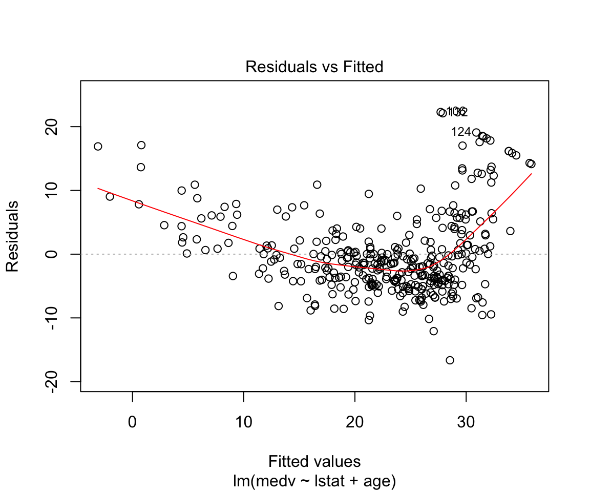
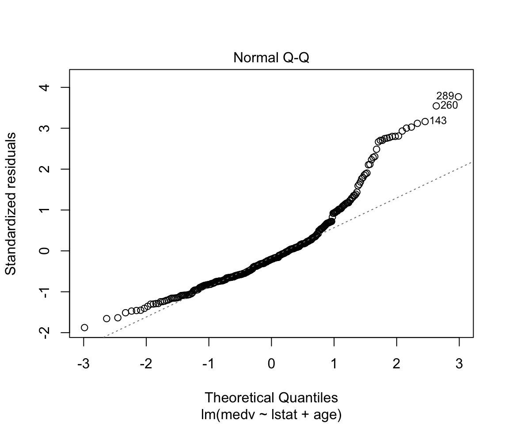
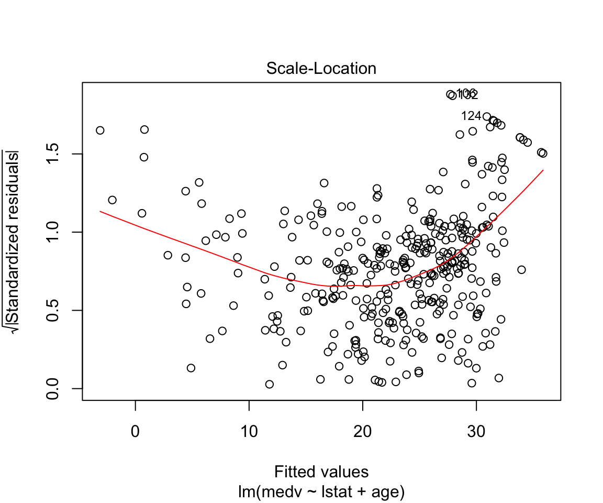
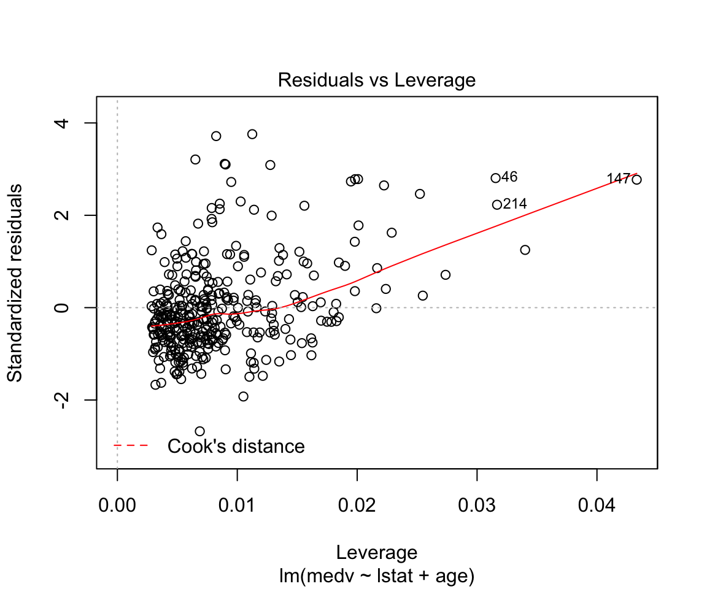
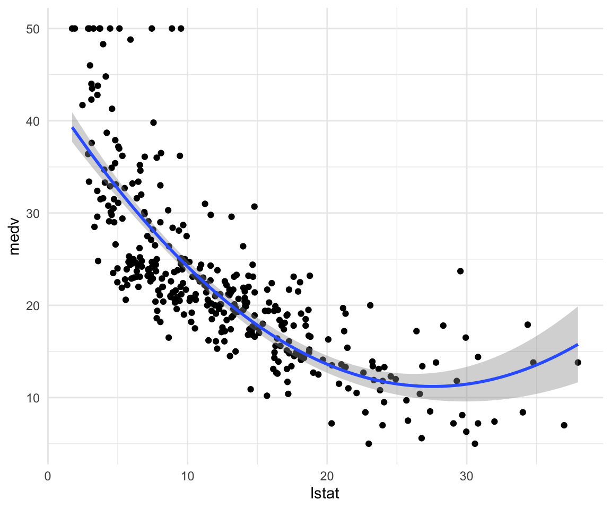
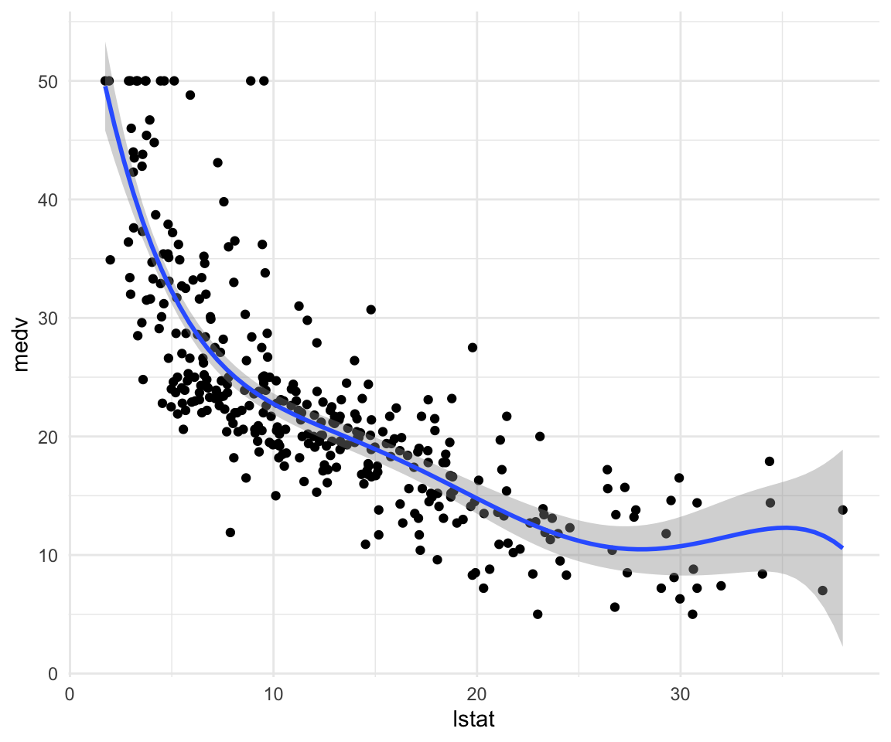
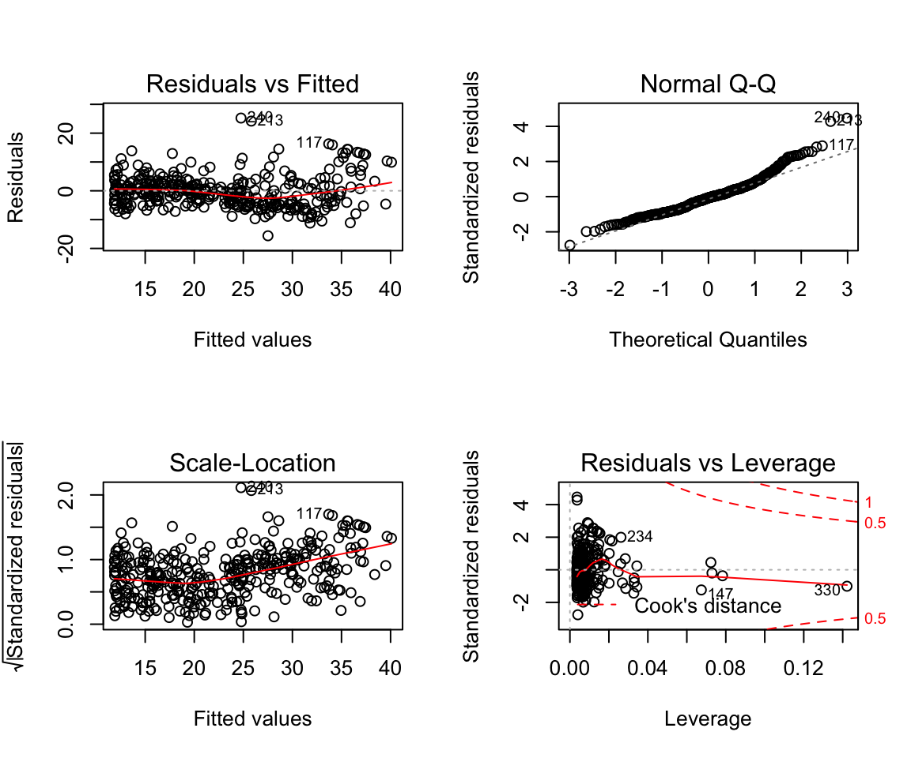

STA314F19
Michal Malyska
Preliminaries and R setup
library(gridExtra)
library(car)
library(gapminder)
library(ggdendro)
library(dendextend)
library(e1071)
library(tidyverse)
library(MASS)
library(ISLR)
library(corrplot)
library(pROC)
library(class)
library(tidymodels)## Registered S3 method overwritten by 'xts':
## method from
## as.zoo.xts zoo## ── Attaching packages ────────── tidymodels 0.0.3 ──## ✓ dials 0.0.4 ✓ recipes 0.1.9
## ✓ infer 0.5.1 ✓ rsample 0.0.5
## ✓ parsnip 0.0.5 ✓ yardstick 0.0.4.9000## ── Conflicts ───────────── tidymodels_conflicts() ──
## x broom::bootstrap() masks modelr::bootstrap()
## x gridExtra::combine() masks dplyr::combine()
## x scales::discard() masks purrr::discard()
## x dplyr::filter() masks stats::filter()
## x recipes::fixed() masks stringr::fixed()
## x dplyr::lag() masks stats::lag()
## x yardstick::mae() masks modelr::mae()
## x yardstick::mape() masks modelr::mape()
## x dials::margin() masks ggplot2::margin()
## x dials::prune() masks dendextend::prune()
## x car::recode() masks dplyr::recode()
## x yardstick::rmse() masks modelr::rmse()
## x MASS::select() masks dplyr::select()
## x xgboost::slice() masks dplyr::slice()
## x car::some() masks purrr::some()
## x yardstick::spec() masks readr::spec()
## x recipes::step() masks stats::step()
## x recipes::yj_trans() masks scales::yj_trans()library(yardstick)
library(parsnip)
library(leaps)
library(glmnet)## Loaded glmnet 3.0-2library(splines)R Setup
If you need help setting up R and Rstudio, I host a guide on my resources page
Loading Data
You can find a fully commented guide on how to load in tabular data using the faster, tidyverse function read_csv() here
Tutorial 3
Lab
data_orig <- MASS::Boston
df <- as_tibble(data_orig)
df_train <- df %>% sample_n(size = length(df$chas) * 0.7)
df_test <- setdiff(df, df_train)Let’s start by showing off what bad practice is and fit a linear model without doing any kind of previous work:
model1 <- lm(medv ~ lstat, data = df_train)
summary(model1)##
## Call:
## lm(formula = medv ~ lstat, data = df_train)
##
## Residuals:
## Min 1Q Median 3Q Max
## -15.215 -3.958 -1.180 2.213 24.447
##
## Coefficients:
## Estimate Std. Error t value Pr(>|t|)
## (Intercept) 34.57179 0.66016 52.37 <0.0000000000000002 ***
## lstat -0.94632 0.04574 -20.69 <0.0000000000000002 ***
## ---
## Signif. codes: 0 '***' 0.001 '**' 0.01 '*' 0.05 '.' 0.1 ' ' 1
##
## Residual standard error: 6.163 on 352 degrees of freedom
## Multiple R-squared: 0.5488, Adjusted R-squared: 0.5475
## F-statistic: 428.1 on 1 and 352 DF, p-value: < 0.00000000000000022plot(model1)


Assumptions are not satisfied!
ggplot(data = df, aes(x = medv, y = ..density..)) +
geom_density() +
geom_histogram(bins = 75, alpha = 0.3, fill = "red") +
theme_minimal()
ggplot(data = df, aes(sample = medv)) +
geom_qq() +
geom_qq_line() +
theme_minimal()
ggplot(data = df, aes(y = medv, x = lstat)) +
geom_point() +
geom_smooth(method = "lm", color = "red") +
geom_smooth(method = "gam", formula = y ~ s(x, bs = "cs"), color = "green") +
geom_smooth(method = "lm", formula = y ~ x + I(x^2), color = "blue") +
theme_minimal()
How to make predictions:
df_test$predictions <- predict(model1, newdata = df_test)How to add multiple variables as predictors:
model2 <- lm(data = df_train, formula = medv ~ lstat + age)
summary(model2)##
## Call:
## lm(formula = medv ~ lstat + age, data = df_train)
##
## Residuals:
## Min 1Q Median 3Q Max
## -16.240 -3.786 -1.238 2.199 22.738
##
## Coefficients:
## Estimate Std. Error t value Pr(>|t|)
## (Intercept) 32.82493 0.85566 38.362 < 0.0000000000000002 ***
## lstat -1.05338 0.05651 -18.639 < 0.0000000000000002 ***
## age 0.04475 0.01420 3.152 0.00176 **
## ---
## Signif. codes: 0 '***' 0.001 '**' 0.01 '*' 0.05 '.' 0.1 ' ' 1
##
## Residual standard error: 6.087 on 351 degrees of freedom
## Multiple R-squared: 0.5612, Adjusted R-squared: 0.5587
## F-statistic: 224.4 on 2 and 351 DF, p-value: < 0.00000000000000022plot(model2)
How to add everything (and subtract some) variables:
model3 <- lm(data = df_train, formula = medv ~ . -age -indus)
summary(model3)##
## Call:
## lm(formula = medv ~ . - age - indus, data = df_train)
##
## Residuals:
## Min 1Q Median 3Q Max
## -16.2725 -2.6163 -0.6059 2.1039 24.9894
##
## Coefficients:
## Estimate Std. Error t value Pr(>|t|)
## (Intercept) 34.610681 5.963598 5.804 0.000000014805298 ***
## crim -0.122622 0.035139 -3.490 0.000547 ***
## zn 0.049093 0.016594 2.958 0.003308 **
## chas 2.969344 0.999299 2.971 0.003174 **
## nox -17.555532 4.103385 -4.278 0.000024474592589 ***
## rm 3.854892 0.489971 7.868 0.000000000000048 ***
## dis -1.464089 0.219273 -6.677 0.000000000098742 ***
## rad 0.293201 0.074997 3.910 0.000112 ***
## tax -0.011192 0.003961 -2.826 0.004997 **
## ptratio -0.829099 0.155306 -5.338 0.000000171143507 ***
## black 0.007305 0.003273 2.232 0.026268 *
## lstat -0.540472 0.056063 -9.640 < 0.0000000000000002 ***
## ---
## Signif. codes: 0 '***' 0.001 '**' 0.01 '*' 0.05 '.' 0.1 ' ' 1
##
## Residual standard error: 4.755 on 342 degrees of freedom
## Multiple R-squared: 0.739, Adjusted R-squared: 0.7306
## F-statistic: 88.04 on 11 and 342 DF, p-value: < 0.00000000000000022How to add interactions:
model4 <- lm(data = df_train, formula = medv ~ . -age -indus + lstat:ptratio )
summary(model4)##
## Call:
## lm(formula = medv ~ . - age - indus + lstat:ptratio, data = df_train)
##
## Residuals:
## Min 1Q Median 3Q Max
## -16.0577 -2.6329 -0.6341 2.0187 25.1558
##
## Coefficients:
## Estimate Std. Error t value Pr(>|t|)
## (Intercept) 36.589512 7.192138 5.087 0.000000600562075 ***
## crim -0.123494 0.035222 -3.506 0.000515 ***
## zn 0.047463 0.016938 2.802 0.005366 **
## chas 3.014429 1.004570 3.001 0.002892 **
## nox -16.714599 4.447437 -3.758 0.000201 ***
## rm 3.796580 0.504550 7.525 0.000000000000475 ***
## dis -1.432258 0.228799 -6.260 0.000000001157358 ***
## rad 0.291335 0.075175 3.875 0.000128 ***
## tax -0.011479 0.004008 -2.864 0.004440 **
## ptratio -0.938570 0.270916 -3.464 0.000599 ***
## black 0.007312 0.003277 2.231 0.026300 *
## lstat -0.731034 0.390263 -1.873 0.061898 .
## ptratio:lstat 0.009966 0.020197 0.493 0.622032
## ---
## Signif. codes: 0 '***' 0.001 '**' 0.01 '*' 0.05 '.' 0.1 ' ' 1
##
## Residual standard error: 4.761 on 341 degrees of freedom
## Multiple R-squared: 0.7392, Adjusted R-squared: 0.73
## F-statistic: 80.54 on 12 and 341 DF, p-value: < 0.00000000000000022How to write high level interactions:
model5 <- lm(data = df_train, formula = medv ~ lstat*ptratio*black)
summary(model5)##
## Call:
## lm(formula = medv ~ lstat * ptratio * black, data = df_train)
##
## Residuals:
## Min 1Q Median 3Q Max
## -12.7447 -3.4986 -0.7326 1.6692 27.4842
##
## Coefficients:
## Estimate Std. Error t value Pr(>|t|)
## (Intercept) -41.0635864 50.5211696 -0.813 0.4169
## lstat 2.5156233 2.7358678 0.919 0.3585
## ptratio 2.9539046 2.5494870 1.159 0.2474
## black 0.2817347 0.1322337 2.131 0.0338 *
## lstat:ptratio -0.1369656 0.1374528 -0.996 0.3197
## lstat:black -0.0119642 0.0072061 -1.660 0.0978 .
## ptratio:black -0.0125044 0.0066872 -1.870 0.0623 .
## lstat:ptratio:black 0.0005303 0.0003630 1.461 0.1449
## ---
## Signif. codes: 0 '***' 0.001 '**' 0.01 '*' 0.05 '.' 0.1 ' ' 1
##
## Residual standard error: 5.611 on 346 degrees of freedom
## Multiple R-squared: 0.6323, Adjusted R-squared: 0.6249
## F-statistic: 85.01 on 7 and 346 DF, p-value: < 0.00000000000000022This is what our data looks like:
ggplot(data = df_train, aes(x = lstat, y = medv)) +
geom_point() +
theme_minimal()
How to add a funciton of a variable as a predictor and how to make simple visualizations without adding predictions:
model6 <- lm(data = df_train, formula = medv ~ lstat + I(lstat^2))
summary(model6)##
## Call:
## lm(formula = medv ~ lstat + I(lstat^2), data = df_train)
##
## Residuals:
## Min 1Q Median 3Q Max
## -15.2670 -4.0100 -0.2982 2.3336 25.3675
##
## Coefficients:
## Estimate Std. Error t value Pr(>|t|)
## (Intercept) 42.367124 1.034271 40.963 <0.0000000000000002 ***
## lstat -2.253864 0.147919 -15.237 <0.0000000000000002 ***
## I(lstat^2) 0.041232 0.004481 9.202 <0.0000000000000002 ***
## ---
## Signif. codes: 0 '***' 0.001 '**' 0.01 '*' 0.05 '.' 0.1 ' ' 1
##
## Residual standard error: 5.54 on 351 degrees of freedom
## Multiple R-squared: 0.6365, Adjusted R-squared: 0.6344
## F-statistic: 307.3 on 2 and 351 DF, p-value: < 0.00000000000000022ggplot(data = df_train, aes(x = lstat, y = medv)) +
geom_point() +
geom_smooth(method = "lm", formula = y ~ x + I(x^2)) +
theme_minimal()
How to fit higher degree polynomials and visualize them:
model7 <- lm(data = df_train, formula = medv ~ poly(lstat, degree = 5))
summary(model7)##
## Call:
## lm(formula = medv ~ poly(lstat, degree = 5), data = df_train)
##
## Residuals:
## Min 1Q Median 3Q Max
## -13.3038 -3.1736 -0.6387 2.1873 26.8217
##
## Coefficients:
## Estimate Std. Error t value Pr(>|t|)
## (Intercept) 22.714 0.283 80.257 < 0.0000000000000002 ***
## poly(lstat, degree = 5)1 -127.518 5.325 -23.948 < 0.0000000000000002 ***
## poly(lstat, degree = 5)2 50.980 5.325 9.574 < 0.0000000000000002 ***
## poly(lstat, degree = 5)3 -16.865 5.325 -3.167 0.001675 **
## poly(lstat, degree = 5)4 20.432 5.325 3.837 0.000148 ***
## poly(lstat, degree = 5)5 -14.271 5.325 -2.680 0.007709 **
## ---
## Signif. codes: 0 '***' 0.001 '**' 0.01 '*' 0.05 '.' 0.1 ' ' 1
##
## Residual standard error: 5.325 on 348 degrees of freedom
## Multiple R-squared: 0.667, Adjusted R-squared: 0.6622
## F-statistic: 139.4 on 5 and 348 DF, p-value: < 0.00000000000000022ggplot(data = df_train, aes(x = lstat, y = medv)) +
geom_point() +
geom_smooth(method = "lm", formula = y ~ poly(x, degree = 5)) +
theme_minimal()
How to change plotting settings in base R (For tidyverse you should use gridExtra)
par(mfrow = c(2,2))
plot(model6)
Fitting character variables:
df2 <- ISLR::Carseats
df2_train <- sample_n(df2, size = length(df2$Sales) * 0.7)
df2_test <- setdiff(df2, df2_train)
glimpse(df2_train)## Observations: 280
## Variables: 11
## $ Sales <dbl> 4.15, 6.53, 3.89, 9.32, 8.54, 6.87, 6.20, 8.19, 12.85, 7.…
## $ CompPrice <dbl> 141, 154, 123, 141, 139, 128, 128, 127, 123, 124, 132, 12…
## $ Income <dbl> 64, 30, 105, 34, 35, 105, 93, 103, 37, 25, 61, 42, 53, 89…
## $ Advertising <dbl> 3, 0, 0, 16, 0, 11, 0, 0, 15, 13, 0, 4, 0, 10, 15, 11, 9,…
## $ Population <dbl> 340, 122, 149, 361, 95, 249, 89, 125, 348, 87, 263, 188, …
## $ Price <dbl> 128, 162, 118, 108, 129, 131, 118, 155, 112, 110, 125, 11…
## $ ShelveLoc <fct> Bad, Medium, Bad, Medium, Medium, Medium, Medium, Good, G…
## $ Age <dbl> 38, 57, 62, 69, 42, 63, 34, 29, 28, 57, 41, 54, 58, 28, 5…
## $ Education <dbl> 13, 17, 16, 10, 13, 13, 18, 15, 12, 10, 12, 15, 16, 10, 1…
## $ Urban <fct> Yes, No, Yes, Yes, Yes, Yes, Yes, No, Yes, Yes, No, Yes, …
## $ US <fct> No, No, Yes, Yes, No, Yes, No, Yes, Yes, Yes, No, Yes, No…# Fit a model with a catergorical variable
model7 <- lm(data = df2_train, formula = Sales ~ ShelveLoc)
summary(model7)##
## Call:
## lm(formula = Sales ~ ShelveLoc, data = df2_train)
##
## Residuals:
## Min 1Q Median 3Q Max
## -7.2257 -1.6761 0.0587 1.4668 6.0926
##
## Coefficients:
## Estimate Std. Error t value Pr(>|t|)
## (Intercept) 5.5774 0.2913 19.145 < 0.0000000000000002 ***
## ShelveLocGood 4.8596 0.4223 11.506 < 0.0000000000000002 ***
## ShelveLocMedium 1.8083 0.3467 5.215 0.00000036 ***
## ---
## Signif. codes: 0 '***' 0.001 '**' 0.01 '*' 0.05 '.' 0.1 ' ' 1
##
## Residual standard error: 2.349 on 277 degrees of freedom
## Multiple R-squared: 0.3286, Adjusted R-squared: 0.3238
## F-statistic: 67.79 on 2 and 277 DF, p-value: < 0.00000000000000022# What are ShelveLocGood and ShelveLocMedium
contrasts(df2$ShelveLoc)## Good Medium
## Bad 0 0
## Good 1 0
## Medium 0 1Load_packages <- function(){
library(tidyverse)
library(MASS)
library(ISLR)
}Load_packages()If you would like to see some more advanced uses of the techniques; I covered the same lab and a chapter of the R for data science textbook that deals with fitting multiple models to the same dataset using tidyverse functions.
Tutorial 4
Homework Solutions Overview:
Question 1
We expect that with a very large number of measurements n, a flexible learning method would be able to learn the signal without as much fear of overfitting.
If the number of predictors p is very large and n is small then there is a greater possibility that a flexible learning method would overfit. Then we expect the inflexible method to be better in this case.
A highly non-linear relationship would most likely need a flexible statistical learning method to perform optimally.
With a very large error term variance \(\sigma^2\) there is more worry about overfitting with flexible methods and thus an inflexible method would perform better.
Question 2
Bias Variance decomposition:
\[ \mathbb{E} \left[(y_0 - \hat{f}(x_0))^2 \right] = \mathbb{V}ar(\hat{f}(x_0)) + \left( \mathbb{E} \hat{f}(x_0) - \mathbb{E}y_0 \right)^2 + \mathbb{V}ar(\epsilon) \] Or equivalently:
\[ \mathbb{E} \left[(y_0 - \hat{y}_0)^2 \right] = \mathbb{V}ar(\hat{y}_0) + \left( \mathbb{E}\hat{y}_0 - \mathbb{E}y_0 \right)^2 + \mathbb{V}ar(\epsilon) \]
The left-hand-side of the above is the expected mean square error (MSE) or a measure of how well on average our approximation function at \(x_0\) is estimating the true value \(y_0\). The first term on the right-hand-side of the above expression is the error in the MSE due to errors in “fitting” the true \(f\) with our approximate \(\hat{f}\). This error come from the sensitivity of the learning procedure to the finite training data set. Typically more flexible fitting methods will be more sensitive to the errors and noise in the given training set. The second term on the right-hand-side is the error in \(f \neq \hat{f}\) due to using a learning algorithm that might not be able to represent the complexities in \(f\). For example, taking to be linear when the true underlying function \(f\) is non-linear. The third term on the right-hand-side represents un-learnable error due to either not having all the predictive variables in our model (predictors that if we could get values for would improve our ability to learn the function \(\hat{f}\) or error that is just intrinsic to the process which we are trying to model. In either case, given the data we have there is no way to reduce this component of the MSE error. A typical plots of the things suggested look like pieces from figures on pages 3 and 7 from the Week 2 Tuesday lecture notes. In figure on page 3 (right-hand-side) we have plots of the training error, testing error and the irreducible error curves. The training error shows a steady decrease (improvement) as the flexibility of the learning method increases. The test error is the red curve that initially decreases as the flexibility increase but then begins to increase again for continued increase in flexibility. The irreducible error is the constant dotted line. Notice that the point where the testing error is as close to the irreducible error would be the optimal operating point for this system. The distance between the lowest point on the testing error curve and the irreducible error gives an indication of how much bias there is in the given learning procedure, i.e. how far the best function \(\hat{f}\) will be from \(f\). In figure on page 7 (left plot) we have curves representing the individual components of the bias-variance decomposition. The blue curve is the squared bias which we see gets smaller as the complexity of the model increase (we are able to model more and more complicated patters in \(\hat{f}\). The orange curve shows the variance of the learned model i.e. as we add complexity (more flexibility), the dependence on the dataset increases. So what function we get out of our learning procedure gets more sensitive to errors/ noise in the training dataset (and the error increase). The horizontal line is the irreducible error again.
Question 3
A very flexible fitting procedure will fit non-linear functions better (if that is indeed the model generation process that is generating your data) but will be more susceptible to errors/ noise in the training dataset. A less flexible approach exchanges where it makes errors. That is a less flexible fitting procedure is unable to model the exact non-linear f but its predictions are also likely to be more stable to errors / noise in the training dataset.
Question 4
A parametric learning procedure means the functional form of the mapping \(f\) is specified, except for the parameter values, which the learning procedure must estimate. A non-parametric learning procedure is much more flexible in the forms of \(f\) it can model and the learning procedure must “learn more” from the data (the functional form that should take) and then the parameters needed to estimate it. A parametric approach is generally a less flexible fitting method while a non-parametric approach is a more flexible method with the trade-offs that that characterization contains.
ISLR Chapter 3 Exercise 5
\[ \hat{y}_{i} = x_{i} \frac{\sum_{i'=1}^{n}\left( x_{i'} y_{i'} \right)}{\sum_{j=1}^{n} x_{j}^{2}} =\sum_{i'=1}^n \frac{\left(x_i x_{i'} \right)}{\sum_{j=1}^n x_j^2}y_{i'} = \sum_{i'=1}^n a_{i'} y_{i'} \]
ISLR Chapter 3 Exercise 7
Given that \(\bar{x} = \bar{y} = 0\)
\[ R^2 = \frac{TSS - RSS}{TSS} = 1- \frac{RSS}{TSS} \]
\[ TSS = \sum_i \left( y_i - \bar{y} \right)^ 2 = \sum_i y_i^2 \]
\[ RSS = \sum_i \left(y_i - \hat{y_i} \right)^2 = \sum_i \left(y_i - (\hat{\beta_0} + \hat{\beta_1} x_i) \right)^2 \]
now noting that:
\[ \hat{\beta_0} = \bar{y} - \hat{\beta_1}\bar{x} = 0 \]
We simplify to get
\[ \sum_i \left(y_i - (\hat{\beta_0} + \hat{\beta_1} x_i) \right)^2 = \sum_i \left(y_i - (\hat{\beta_1} x_i) \right)^2 \]
Then looking at formula for \(\hat{\beta_1}\):
\[ \hat{\beta_1} = \frac{\sum_i (x_i - \bar{x}) (y_i - \bar{y})}{\sum_i (x_i - \bar{x})^2} = \\ \frac{\sum_i x_iy_i}{\sum_i x_i^2} \]
Plugging in and expanding
\[ \sum_i \left(y_i - (\hat{\beta_1} x_i) \right)^2 = \sum_i \left(y_i^2 - 2(\hat{\beta_1} x_i)y_i + (\hat{\beta_1} x_i)^2 \right) = \\ = \sum_i \left(y_i^2 - 2(\frac{\sum_i x_iy_i}{\sum_i x_i^2} x_i)y_i + (\frac{\sum_i x_iy_i}{\sum_i x_i^2} x_i)^2 \right) = \\ = \sum_i y_i^2 - 2 \frac{\sum_i x_iy_i}{\sum_i x_i^2} \sum_i x_i y_i + \left( \frac{\sum_i x_iy_i}{\sum_i x_i^2} \right)^2 \sum_ix_i^2 = \\ = \sum_i y_i^2 - \frac{(\sum_i x_iy_i)^2}{\sum_i x_i^2} \]
Plugging into the \(R^2\) formula:
\[ R^2 = \frac{TSS - RSS}{TSS} = \frac{\sum_i y_i^2 - \sum_i y_i^2 + \frac{(\sum_i x_iy_i)^2}{\sum_i x_i^2}}{\sum_i y_i^2} = \frac{(\sum_i x_iy_i)^2}{\sum_i x_i^2 \sum_i y_i^2} \]
Correlation is (since \(\bar{x} = \bar{y} = 0\)):
\[ Corr(X,Y) = \frac{(\sum_i x_iy_i)}{\sqrt{\sum_i x_i^2}\sqrt{\sum_i y_i^2}} \]
Additional Materials
Great blogpost on understanding Mutinomial regression with Partial Dependence plots.
If you want to type up your homework 2 in RMarkdown and save on time I would suggest taking a look at the equatiomatic package. (This is also super useful for STA303)
Tutorial Questions
- Why does logistic regression become unstable for linearly separable data?
Answer:
If the data is perfectly linearly separable (meaning that you can draw a hyperplane such that all datapoints of either class are on different sides of it). Then the MLE solution to logistic regression does not exist. What this would mean when you are estimating coefficients is that as you train your model the estimates are going to diverge to infinity as your logistic regression is trying to approximate a step function. A good description of this can be found here
Tutorial 5
Lab 4 ISLR
# Load the data
data_orig <- ISLR::Smarket
df <- data_orig
df_train <- df %>% sample_n(size = 0.7*1250)
df_test <- setdiff(df, df_train)Some simple data exploration
# Tidyverse way of subsetting data and computing correlations
corrs <- df %>%
dplyr::select(-Direction) %>%
cor()
corrs## Year Lag1 Lag2 Lag3 Lag4
## Year 1.00000000 0.029699649 0.030596422 0.033194581 0.035688718
## Lag1 0.02969965 1.000000000 -0.026294328 -0.010803402 -0.002985911
## Lag2 0.03059642 -0.026294328 1.000000000 -0.025896670 -0.010853533
## Lag3 0.03319458 -0.010803402 -0.025896670 1.000000000 -0.024051036
## Lag4 0.03568872 -0.002985911 -0.010853533 -0.024051036 1.000000000
## Lag5 0.02978799 -0.005674606 -0.003557949 -0.018808338 -0.027083641
## Volume 0.53900647 0.040909908 -0.043383215 -0.041823686 -0.048414246
## Today 0.03009523 -0.026155045 -0.010250033 -0.002447647 -0.006899527
## Lag5 Volume Today
## Year 0.029787995 0.53900647 0.030095229
## Lag1 -0.005674606 0.04090991 -0.026155045
## Lag2 -0.003557949 -0.04338321 -0.010250033
## Lag3 -0.018808338 -0.04182369 -0.002447647
## Lag4 -0.027083641 -0.04841425 -0.006899527
## Lag5 1.000000000 -0.02200231 -0.034860083
## Volume -0.022002315 1.00000000 0.014591823
## Today -0.034860083 0.01459182 1.000000000# Easy way to visualize correlations
corrplot(corrs, method = "color", type = "lower")
Pretty much no correlations between our predictors
Below is the “hacky” way to do correlations for variables that are not numerical. You should always stop and think whether what you are doing makes sense.
corrs <- df %>%
mutate(Direction = if_else(Direction == "Up", 1, 0)) %>% # Convert the string to a number
cor()
corrplot(corrs, method = "color", type = "lower")
Our response is only correlated with Today. This means that we probably won’t see much statistical significance. (Note that this is not really a very rigorous approach but it’s a good benchmark to see which variables have the highest potential)
Fit a Logistic Regression using all the lag variables and volume.
log_reg <- glm(Direction ~ . - Today ,data = df_train , family = binomial)
summary(log_reg)##
## Call:
## glm(formula = Direction ~ . - Today, family = binomial, data = df_train)
##
## Deviance Residuals:
## Min 1Q Median 3Q Max
## -1.396 -1.189 1.005 1.134 1.369
##
## Coefficients:
## Estimate Std. Error z value Pr(>|z|)
## (Intercept) -243.445631 115.082052 -2.115 0.0344 *
## Year 0.121528 0.057545 2.112 0.0347 *
## Lag1 -0.043183 0.058426 -0.739 0.4598
## Lag2 -0.008235 0.060275 -0.137 0.8913
## Lag3 0.008761 0.060651 0.144 0.8851
## Lag4 0.060948 0.059485 1.025 0.3056
## Lag5 0.029985 0.060816 0.493 0.6220
## Volume 0.070850 0.223749 0.317 0.7515
## ---
## Signif. codes: 0 '***' 0.001 '**' 0.01 '*' 0.05 '.' 0.1 ' ' 1
##
## (Dispersion parameter for binomial family taken to be 1)
##
## Null deviance: 1211.9 on 874 degrees of freedom
## Residual deviance: 1202.1 on 867 degrees of freedom
## AIC: 1218.1
##
## Number of Fisher Scoring iterations: 4We can either make prediction on just the movement direction (by higher probability) or we can return a vector of probaabilities for each case. In the binary case it is enough to specify one. Specifying type = “response” makes sure that instead of returning the log odds, we get the probabilites directly.
probabilities = predict(log_reg, type = "response", newdata = df_test) # Extract the probabilites
glimpse(probabilities)## Named num [1:1250] 0.466 0.398 0.424 0.467 0.469 ...
## - attr(*, "names")= chr [1:1250] "1" "2" "3" "4" ...contrasts(data_orig$Direction) # Which way is Up?## Up
## Down 0
## Up 1# Set Threshold
threshold <- 0.5
# Pick predictions above the threshold
predictions <- rep("Down",length(df_test$Year)) #initialize a vector of all predicitons to be Down
predictions[probabilities > 0.5] <- "Up" # Change those with probabilities higher
# than threshold to be Up
# Actual values
actual <- df_test$Direction
# Generate a truth table for our predictions
table(predictions, actual)## actual
## predictions Down Up
## Down 239 213
## Up 363 435This means we missed 113 + 66 out of the total of 375 on our test set. We separate them because cost of making an error in one way may be higher than the other.
Now let’s train an LDA model on the same variables (this is not the same as in the lab)
# Train the model
lda_model <- MASS::lda(Direction~. - Today, data = df_train)
# Print out the model summary.
lda_model## Call:
## lda(Direction ~ . - Today, data = df_train)
##
## Prior probabilities of groups:
## Down Up
## 0.4822857 0.5177143
##
## Group means:
## Year Lag1 Lag2 Lag3 Lag4 Lag5
## Down 2002.825 0.03877251 -0.006336493 -0.02943128 -0.07300000 -0.04856635
## Up 2003.095 -0.01965784 -0.009161148 -0.01168653 0.01851656 -0.01085651
## Volume
## Down 1.451423
## Up 1.491795
##
## Coefficients of linear discriminants:
## LD1
## Year 0.57370134
## Lag1 -0.20293029
## Lag2 -0.03902997
## Lag3 0.04112472
## Lag4 0.28662321
## Lag5 0.14095625
## Volume 0.32790504# If you work with the object explorer in R you can get these formulas for how
# to extract predictions classes and probabilities
predictions <- predict(lda_model, newdata = df_test)[["class"]]
probabilities <- predict(lda_model, newdata = df_test)[["posterior"]]
# Use Base R to find probabilities for Up
probabilities <- probabilities[,2]
predictions <- rep("Down",length(df_test$Year)) #initialize a vector of all predicitons to be Down
predictions[probabilities > 0.5] <- "Up" # Change those with probabilities higher
table(predictions, actual)## actual
## predictions Down Up
## Down 239 213
## Up 363 435In the similar way we can do QDA:
# Train the model
qda_model <- MASS::qda(Direction~. - Today, data = df_train)
# Print out the model summary.
qda_model## Call:
## qda(Direction ~ . - Today, data = df_train)
##
## Prior probabilities of groups:
## Down Up
## 0.4822857 0.5177143
##
## Group means:
## Year Lag1 Lag2 Lag3 Lag4 Lag5
## Down 2002.825 0.03877251 -0.006336493 -0.02943128 -0.07300000 -0.04856635
## Up 2003.095 -0.01965784 -0.009161148 -0.01168653 0.01851656 -0.01085651
## Volume
## Down 1.451423
## Up 1.491795# If you work with the object explorer in R you can get these formulas for how
# to extract predictions classes and probabilities
predictions <- predict(qda_model, newdata = df_test)[["class"]]
probabilities <- predict(qda_model, newdata = df_test)[["posterior"]]
# Use Base R to find probabilities for Up
probabilities <- probabilities[,2]
predictions <- rep("Down",length(df_test$Year)) #initialize a vector of all predicitons to be Down
predictions[probabilities > 0.5] <- "Up" # Change those with probabilities higher
table(predictions, actual)## actual
## predictions Down Up
## Down 229 191
## Up 373 457Finally , we will look at the K-nearest neighbourghs algorithm (KNN). It is inceredibly simple and used a lot in practice for a number of tasks. Not so much just simple classification but nevertheless it’s an extremely important algorithm for you to know.
Because it uses euclidean distance you need to standardize all of your variables.
# Create the scaling function cause the regular one outputs a matrix instead
# of a vector
scale2 <- function(x, na.rm = FALSE) (x - mean(x, na.rm = na.rm)) / sd(x, na.rm)
df_train_std <- df_train %>%
dplyr::select(-Direction , -Today) %>% # Remove the variables we are not considering and response
mutate_all(.funs = scale2) # I apply the scale2() function to all other variables.
df_test_std <- df_test %>%
dplyr::select(-Direction , -Today) %>% # Remove the variables we are not considering and response
mutate_all(.funs = scale2) # I apply the scale2() function to all other variables.Now I will use the KNN function from “class” library. To fit a knn model. It requires a training and testing dataset which is what we should have been using this entire tutorial.
predictions <- knn(train = df_train_std, # Training Set
test = df_test_std, # Test Set
cl = df_train$Direction, # Labels for Training
k = 3) # 3 nearest Neighbours
table(predictions, actual)## actual
## predictions Down Up
## Down 399 194
## Up 203 454It’s not a model you train that has parameters so there is no summary, no coefficients, no p-values. How do you pick k? Looking at a validation set seems like a reasonable approach.
val_indices <- sample.int(n = 0.7*nrow(df_train), replace = FALSE)
df_train_std_v <- df_train_std[val_indices,]
df_val_std <- df_train_std[-val_indices,]
train_v_labels <- df_train[val_indices,] %>% pull(Direction)
val_labels <- df_train[-val_indices,] %>% pull(Direction)
for (k in 1:15) {
predictions <- knn(train = df_train_std_v, # Training Set
test = df_val_std, # Test Set
cl = train_v_labels, # Labels for Training
k = k,# k nearest Neighbours
use.all = TRUE) # if there is a Tie use all that tied.
cat("k is", k, "\n")
# Accuracy
print(mean(predictions == val_labels))
# Truth Tables
print(table(predictions, val_labels))
}## k is 1
## [1] 0.4562738
## val_labels
## predictions Down Up
## Down 50 58
## Up 85 70
## k is 2
## [1] 0.4372624
## val_labels
## predictions Down Up
## Down 50 63
## Up 85 65
## k is 3
## [1] 0.4296578
## val_labels
## predictions Down Up
## Down 44 59
## Up 91 69
## k is 4
## [1] 0.4410646
## val_labels
## predictions Down Up
## Down 46 58
## Up 89 70
## k is 5
## [1] 0.4980989
## val_labels
## predictions Down Up
## Down 52 49
## Up 83 79
## k is 6
## [1] 0.4980989
## val_labels
## predictions Down Up
## Down 55 52
## Up 80 76
## k is 7
## [1] 0.486692
## val_labels
## predictions Down Up
## Down 48 48
## Up 87 80
## k is 8
## [1] 0.4714829
## val_labels
## predictions Down Up
## Down 49 53
## Up 86 75
## k is 9
## [1] 0.4980989
## val_labels
## predictions Down Up
## Down 47 44
## Up 88 84
## k is 10
## [1] 0.4828897
## val_labels
## predictions Down Up
## Down 47 48
## Up 88 80
## k is 11
## [1] 0.4904943
## val_labels
## predictions Down Up
## Down 46 45
## Up 89 83
## k is 12
## [1] 0.5247148
## val_labels
## predictions Down Up
## Down 49 39
## Up 86 89
## k is 13
## [1] 0.4980989
## val_labels
## predictions Down Up
## Down 42 39
## Up 93 89
## k is 14
## [1] 0.4980989
## val_labels
## predictions Down Up
## Down 43 40
## Up 92 88
## k is 15
## [1] 0.513308
## val_labels
## predictions Down Up
## Down 44 37
## Up 91 91k vary a lot between runs so I would probably pick something around 4-5.
Tutorial 6
Agenda:
Review of logistic regression etc. (now with tidymodels)
ROC and AUC
Tidymodels
This will be a tiny bit slower than usual as I am new to tidymodels.
Goals:
Prepare data (recipes)
Split data (rsample)
Fit models
Analyze models (broom)
Show ROC and AUC metrics (yardstick)
Prepare Data
df <- data_orig # I will re-load the original dataset from last week
df <- df %>% dplyr::select(-Today) # remove the column we don't care aboutCreate the data split for Training and Testing
df_split <- df %>% rsample::initial_split(prop = 0.7)
df_split # This outputs numbers of rows for <training, testing, total>## <875/375/1250># Can access the datasets through training() or testing() functions
df_split %>% training() %>% glimpse()## Observations: 875
## Variables: 8
## $ Year <dbl> 2001, 2001, 2001, 2001, 2001, 2001, 2001, 2001, 2001, 2001,…
## $ Lag1 <dbl> 0.381, 0.959, 1.032, -0.623, 0.213, 1.392, 0.287, -0.189, 0…
## $ Lag2 <dbl> -0.192, 0.381, 0.959, 1.032, 0.614, 0.213, 1.303, -0.498, -…
## $ Lag3 <dbl> -2.624, -0.192, 0.381, 0.959, -0.623, 0.614, 0.027, 0.287, …
## $ Lag4 <dbl> -1.055, -2.624, -0.192, 0.381, 1.032, -0.623, -0.403, 1.303…
## $ Lag5 <dbl> 5.010, -1.055, -2.624, -0.192, 0.959, 1.032, 1.392, 0.027, …
## $ Volume <dbl> 1.1913, 1.2965, 1.4112, 1.2760, 1.3491, 1.4450, 1.3090, 1.0…
## $ Direction <fct> Up, Up, Down, Up, Up, Down, Down, Up, Up, Down, Up, Down, D…df_split %>% testing() %>% glimpse()## Observations: 375
## Variables: 8
## $ Year <dbl> 2001, 2001, 2001, 2001, 2001, 2001, 2001, 2001, 2001, 2001,…
## $ Lag1 <dbl> 0.614, -0.403, 0.027, 1.303, -0.498, 0.701, -0.562, -0.865,…
## $ Lag2 <dbl> -0.623, 1.392, -0.403, 0.027, 0.287, 0.680, 0.701, 1.183, -…
## $ Lag3 <dbl> 1.032, 0.213, 1.392, -0.403, 1.303, -0.189, 0.680, -1.334, …
## $ Lag4 <dbl> 0.959, 0.614, 0.213, 1.392, 0.027, -0.498, -0.189, -0.623, …
## $ Lag5 <dbl> 0.381, -0.623, 0.614, 0.213, -0.403, 0.287, -0.498, -0.841,…
## $ Volume <dbl> 1.2057, 1.4078, 1.1640, 1.2326, 1.2580, 1.1498, 1.2953, 1.0…
## $ Direction <fct> Up, Up, Up, Up, Down, Down, Up, Down, Down, Up, Up, Down, D…# This can be used to make sure that your samples are reasonable by using
# summarize.
df_split %>% training() %>%
summarise_if(is.numeric,list(~min(.),
~max(.),
~mean(.),
~median(.),
~sd(.))) -> sum1
df_split %>% testing() %>%
summarise_if(is.numeric,list(~min(.),
~max(.),
~mean(.),
~median(.),
~sd(.))) -> sum2
# Or tidyverse way
rbind(sum1, sum2) %>% # Combine the two datasets
rownames_to_column() %>%
gather(var, value, -rowname) %>%
spread(rowname, value) # Transpose## var 1 2
## 1 Lag1_max 5.733000000 4.36800000
## 2 Lag1_mean -0.026235429 0.07399733
## 3 Lag1_median 0.003000000 0.10800000
## 4 Lag1_min -4.318000000 -4.92200000
## 5 Lag1_sd 1.151001446 1.09953981
## 6 Lag2_max 5.408000000 5.73300000
## 7 Lag2_mean 0.018988571 -0.03124267
## 8 Lag2_median 0.049000000 0.00200000
## 9 Lag2_min -4.922000000 -4.31800000
## 10 Lag2_sd 1.150494502 1.10311093
## 11 Lag3_max 5.733000000 5.40800000
## 12 Lag3_mean 0.007901714 -0.01271733
## 13 Lag3_median 0.028000000 0.04600000
## 14 Lag3_min -4.922000000 -4.15400000
## 15 Lag3_sd 1.117792670 1.18746669
## 16 Lag4_max 5.733000000 4.73400000
## 17 Lag4_mean -0.023384000 0.06001600
## 18 Lag4_median 0.028000000 0.04600000
## 19 Lag4_min -4.922000000 -3.52300000
## 20 Lag4_sd 1.189146983 1.01062104
## 21 Lag5_max 5.733000000 4.00500000
## 22 Lag5_mean 0.026669714 -0.04353067
## 23 Lag5_median 0.065000000 -0.04800000
## 24 Lag5_min -4.922000000 -3.83500000
## 25 Lag5_sd 1.175502624 1.07943842
## 26 Volume_max 3.152470000 2.70359000
## 27 Volume_mean 1.476346411 1.48287504
## 28 Volume_median 1.422360000 1.43743000
## 29 Volume_min 0.439670000 0.35607000
## 30 Volume_sd 0.355683965 0.37147562
## 31 Year_max 2005.000000000 2005.00000000
## 32 Year_mean 2003.016000000 2003.01600000
## 33 Year_median 2003.000000000 2003.00000000
## 34 Year_min 2001.000000000 2001.00000000
## 35 Year_sd 1.412503822 1.40273225Now we would like to preprocess our data to be mean 0 and standard deviation of 1. We will be using the recipe package.
df_recipe <- df_split %>%
training() %>%
recipe(Direction ~ .) %>%
step_center(all_predictors(), -all_outcomes()) %>%
step_scale(all_predictors(), -all_outcomes()) %>% # I have no idea why this did not run during tutorial
prep(retain = TRUE)
df_recipe## Data Recipe
##
## Inputs:
##
## role #variables
## outcome 1
## predictor 7
##
## Training data contained 875 data points and no missing data.
##
## Operations:
##
## Centering for Year, Lag1, Lag2, Lag3, Lag4, Lag5, Volume [trained]
## Scaling for Year, Lag1, Lag2, Lag3, Lag4, Lag5, Volume [trained]Now we would like to apply the same transformations to the testing dataset. The names are lovely, I know.
# Create a test data set
df_test <- df_recipe %>% bake(testing(df_split))
# Create the training data set
df_train <- juice(df_recipe)Prepare the model
Now that we have prepared our training and testing datasets we should prepare our models. We will be using the parsnip library which unifies the calls to models. So you no longer will have to remember that for a glm you have to specify type = “response”, and for LDA you don’t. The way we define models will come in handy when we do multiple flavours of the same model with different regularizations.
# We start with logistic regression
dir_model_logreg <- logistic_reg() # Specify what kind of model we are building
dir_model_logreg # Model Specification## Logistic Regression Model Specification (classification)# We can pick which "engine" we will use for the model. For logistic regression
# That should be one of glm or glmnet.
dir_model_logreg <- dir_model_logreg %>%
set_engine("glm")
dir_model_logreg## Logistic Regression Model Specification (classification)
##
## Computational engine: glm# Fit the model
logreg_fit <- dir_model_logreg %>% fit(Direction ~ ., data = df_train)
# Instead of using the summary() function we can use the tidy() function from
# broom to get a data_frame.
tidy(logreg_fit)## # A tibble: 8 x 5
## term estimate std.error statistic p.value
## <chr> <dbl> <dbl> <dbl> <dbl>
## 1 (Intercept) 0.104 0.0681 1.52 0.128
## 2 Year 0.150 0.0820 1.83 0.0669
## 3 Lag1 -0.120 0.0691 -1.74 0.0815
## 4 Lag2 -0.119 0.0688 -1.73 0.0828
## 5 Lag3 0.0105 0.0687 0.153 0.878
## 6 Lag4 -0.0373 0.0690 -0.540 0.589
## 7 Lag5 0.00894 0.0688 0.130 0.897
## 8 Volume -0.00239 0.0822 -0.0290 0.977Make Predictions
Now we would like to make predictions and evaluate them.
# We can combine everything into one pipe!
logreg_results <- df_test %>%
dplyr::select(Direction) %>% # Pick just the labels
as_tibble() %>% # Make sure they are a tibble
mutate(
log_reg_class = predict(logreg_fit, new_data = df_test) %>% pull(.pred_class), # Extracts the class predictions
log_reg_prob = predict(logreg_fit, new_data = df_test, type = "prob") %>% pull(.pred_Up) # Extracts the probiablities
)
predict(logreg_fit, new_data = df_test) # See what the predictions look like## # A tibble: 375 x 1
## .pred_class
## <fct>
## 1 Down
## 2 Down
## 3 Down
## 4 Down
## 5 Down
## 6 Down
## 7 Down
## 8 Down
## 9 Up
## 10 Down
## # … with 365 more rowspredict(logreg_fit, new_data = df_test, type = "prob") # See what the probabilites look like## # A tibble: 375 x 2
## .pred_Down .pred_Up
## <dbl> <dbl>
## 1 0.532 0.468
## 2 0.559 0.441
## 3 0.515 0.485
## 4 0.573 0.427
## 5 0.520 0.480
## 6 0.559 0.441
## 7 0.529 0.471
## 8 0.535 0.465
## 9 0.432 0.568
## 10 0.573 0.427
## # … with 365 more rowsglimpse(logreg_results)## Observations: 375
## Variables: 3
## $ Direction <fct> Up, Up, Up, Up, Down, Down, Up, Down, Down, Up, Up, Dow…
## $ log_reg_class <fct> Down, Down, Down, Down, Down, Down, Down, Down, Up, Dow…
## $ log_reg_prob <dbl> 0.4681106, 0.4411732, 0.4849128, 0.4265915, 0.4798973, …Evaluate performance
Now we would like to see how well we did. For this we can use another package from tidymodels - yardstick.
# AUC
logreg_results %>% roc_auc(truth = Direction, log_reg_prob)## # A tibble: 1 x 3
## .metric .estimator .estimate
## <chr> <chr> <dbl>
## 1 roc_auc binary 0.514# Accuracy
logreg_results %>% accuracy(truth = Direction, log_reg_class)## # A tibble: 1 x 3
## .metric .estimator .estimate
## <chr> <chr> <dbl>
## 1 accuracy binary 0.528# Truth Table / Confidence Matrix
logreg_results %>% conf_mat(truth = Direction, log_reg_class)## Truth
## Prediction Down Up
## Down 61 51
## Up 126 137# Nicer Confidence Matrix
logreg_results %>%
conf_mat(truth = Direction, log_reg_class) %>%
pluck(1) %>%
as_tibble() %>%
ggplot(aes(Prediction, Truth, alpha = n)) +
geom_tile(show.legend = FALSE) +
geom_text(aes(label = n), colour = "white", alpha = 1, size = 8) +
theme_minimal()
# ROC - There is a minor problem with yardstick right now that makes this code
# require the development version of the package. With next update it should
# be included
roc_curve(logreg_results, truth = Direction, log_reg_prob) %>%
autoplot()
# or Smoothed:
roc_curve(logreg_results, truth = Direction, log_reg_prob,
options = list(smooth = TRUE)) %>%
autoplot()
You can notice that our ROC curve dips below the reference line for a moment. That means it is worse than random guessing in that region! Overall our model is very bad. We can run a hedge fund now.
Another way to think about ROC curves is in terms of True positive rate and False positive rate (since those are the same as the axes). For each threshold you can choose you will receive a single point in the space of (TPR, FPR). Plotting those points for all unique values of threshold and connecting results in the ROC curve.
rm(list = ls())Tutorial 7
Writing functions
- Arguments (Default arguments, unnamed arguments)
first_function <- function(argument1, argument2) {
result <- argument1 + argument2
#return this
result
}
first_function(1, 2)## [1] 3second_function <- function(argument1=1, argument2=1){
argument1 + argument2
}
second_function(2)## [1] 3third_function <- function(val1, val2){
val1 / val2
}
third_function(2, 1)## [1] 2third_function(val2 = 2, val1 = 1)## [1] 0.5You can also let the call to the function include unnamed arguments that are then (potentially) passed on to other functions
red_plot <- function(x, y, ...){
plot(x, y, col = "red", ...)
}
red_plot(1:10, 1:10, xlab = "X axis name", ylab = "Y axis name")
# eval=FALSE means don't evaluate this chunk
# include = TRUE means show it in the file
# echo = FALSE means it will show just the output and not the code but runs the
# code
params <- list(sample = 10, repetitions = 100, lr = 0.05)
model_function <- function(params){
for (i in c(1:params$repetitions)) {
do sth
}
}- Returns
f4 <- function(x, y) {
sum <- x + y
difference <- x - y
results <- list(sum = sum, difference = difference)
return(results)
}
a <- f4(1,2)If I have a file containing the functions I would like to use (In this case it is the function_utils.R file) you can load in the functions using the source() command.
- Sourcing
source(file = "function_utils.R")
my_function(args = list(a = 1, b = 2))## [1] 3For Loops
- Basic For loop
samples <- runif(10)
for (sample in samples) {
print(sample + 5)
}## [1] 5.796561
## [1] 5.215439
## [1] 5.571921
## [1] 5.655329
## [1] 5.315566
## [1] 5.203861
## [1] 5.575691
## [1] 5.014822
## [1] 5.944064
## [1] 5.84321- Don’t override vectors with vectors: vec <- c(vec, num)
Say we would like to look at the variance of the expected mean of some distribution as we take random samples of varying size.
samp_means <- c()
reps <- 1000
size <- 1000
# Don't do this
for (i in 1:reps) {
samp_means <- c(samp_means, mean(rnorm(n = size)))
}
var(samp_means)## [1] 0.001031789This results in us having to allocate new memory to the vector samp_means at every iteration which results in incredibly slow code. Instead if we know the length of the output we are expecting to get, we begin by creating an empty vector of that length and overwriting the values within it. This makes sure that we don’t have to move the vector in memory and doesn’t slow us down at all.
# Do this instead
reps <- 1000
size <- 1000
samples <- rep(NA, reps)
for (i in c(1:reps)) {
samp_means[i] <- mean(rnorm(n = size))
}
var(samp_means)## [1] 0.0009412145- for (i in 1:length(a)) allows us to interact with elements of a in an iterative way while keeping just an index instead of extracting the inside of the vector.
a <- runif(100)
# Change all but the last 2 elements to something
for (i in (1:(length(a) - 2))) {
a[i] <- NA
}
a## [1] NA NA NA NA NA NA NA
## [8] NA NA NA NA NA NA NA
## [15] NA NA NA NA NA NA NA
## [22] NA NA NA NA NA NA NA
## [29] NA NA NA NA NA NA NA
## [36] NA NA NA NA NA NA NA
## [43] NA NA NA NA NA NA NA
## [50] NA NA NA NA NA NA NA
## [57] NA NA NA NA NA NA NA
## [64] NA NA NA NA NA NA NA
## [71] NA NA NA NA NA NA NA
## [78] NA NA NA NA NA NA NA
## [85] NA NA NA NA NA NA NA
## [92] NA NA NA NA NA NA NA
## [99] 0.1440219 0.5395327- for (i in vec) allows us to iterate over things inside of a vector.
vec <- c("a", "b", "c")
for (string in vec) {
print(string)
}## [1] "a"
## [1] "b"
## [1] "c"- for (i in list) allows us to iterate over lists (named or not) and therefore interact with multiple types in the same loop. This requires very rigorous type checking to work properly.
params <- list(a = "a", lr = 0.05)
for (param in params) {
print(param)
}## [1] "a"
## [1] 0.05- over matrices
matrix <- matrix(1:24, nrow = 3)
for (i in 1:nrow(matrix)) {
for (j in 1:ncol(matrix)) {
print(matrix[i,j])
}
}## [1] 1
## [1] 4
## [1] 7
## [1] 10
## [1] 13
## [1] 16
## [1] 19
## [1] 22
## [1] 2
## [1] 5
## [1] 8
## [1] 11
## [1] 14
## [1] 17
## [1] 20
## [1] 23
## [1] 3
## [1] 6
## [1] 9
## [1] 12
## [1] 15
## [1] 18
## [1] 21
## [1] 24- over columns in tidyverse (don’t). Columns in tidyverse can contain pretty much any other object (including data tables) as observations. Iterating over the columns by themselves is not a good idea unless you really know what to expect.
df <- as_tibble(MASS::Boston)
df %>% pull(age) -> vector
# Prints about the first 1/25 of the observations in Boston$age
for (i in (1:floor(length(vector)/25))) {
print(vector[i])
}## [1] 65.2
## [1] 78.9
## [1] 61.1
## [1] 45.8
## [1] 54.2
## [1] 58.7
## [1] 66.6
## [1] 96.1
## [1] 100
## [1] 85.9
## [1] 94.3
## [1] 82.9
## [1] 39
## [1] 61.8
## [1] 84.5
## [1] 56.5
## [1] 29.3
## [1] 81.7
## [1] 36.6
## [1] 69.5rm(list = ls())Tutorial 8
Pick up your midterms at the start of tutorial!
We are covering the 6.5 Lab 1 - Subset Selection Methods from ISLR.
df_orig <- ISLR::Hitters # original data
df <- df_orig #Working copyFirst, we would like to figure out if there are any missing observations:
df %>% summarize_all(funs(sum(is.na(.)))) %>% t()## Warning: funs() is soft deprecated as of dplyr 0.8.0
## Please use a list of either functions or lambdas:
##
## # Simple named list:
## list(mean = mean, median = median)
##
## # Auto named with `tibble::lst()`:
## tibble::lst(mean, median)
##
## # Using lambdas
## list(~ mean(., trim = .2), ~ median(., na.rm = TRUE))
## This warning is displayed once per session.## [,1]
## AtBat 0
## Hits 0
## HmRun 0
## Runs 0
## RBI 0
## Walks 0
## Years 0
## CAtBat 0
## CHits 0
## CHmRun 0
## CRuns 0
## CRBI 0
## CWalks 0
## League 0
## Division 0
## PutOuts 0
## Assists 0
## Errors 0
## Salary 59
## NewLeague 0We can see that there are 59 observations that are missing the Salary value and nothing else. This is quite a large proportion at 0.1832298 which is just a bit less than \(\frac{1}{5}\). We could try to fill those observations in (this is called imputation and has a ton of different options), but for now we can just filter them out. Here we will be using salary as the target so we cannot fill it in beforehand.
df <- df %>% filter_all(all_vars(!is.na(.)))We can use the library leaps to perform the best subset selection using lowest RSS. Let’s use it to see which model performs “best”. By default it includes up to 8 variables. The summary lists models in order of increasing number of variables only including the best model for each given number.
regfit_full = regsubsets(Salary~., data = df)
summary(regfit_full)## Subset selection object
## Call: regsubsets.formula(Salary ~ ., data = df)
## 19 Variables (and intercept)
## Forced in Forced out
## AtBat FALSE FALSE
## Hits FALSE FALSE
## HmRun FALSE FALSE
## Runs FALSE FALSE
## RBI FALSE FALSE
## Walks FALSE FALSE
## Years FALSE FALSE
## CAtBat FALSE FALSE
## CHits FALSE FALSE
## CHmRun FALSE FALSE
## CRuns FALSE FALSE
## CRBI FALSE FALSE
## CWalks FALSE FALSE
## LeagueN FALSE FALSE
## DivisionW FALSE FALSE
## PutOuts FALSE FALSE
## Assists FALSE FALSE
## Errors FALSE FALSE
## NewLeagueN FALSE FALSE
## 1 subsets of each size up to 8
## Selection Algorithm: exhaustive
## AtBat Hits HmRun Runs RBI Walks Years CAtBat CHits CHmRun CRuns CRBI
## 1 ( 1 ) " " " " " " " " " " " " " " " " " " " " " " "*"
## 2 ( 1 ) " " "*" " " " " " " " " " " " " " " " " " " "*"
## 3 ( 1 ) " " "*" " " " " " " " " " " " " " " " " " " "*"
## 4 ( 1 ) " " "*" " " " " " " " " " " " " " " " " " " "*"
## 5 ( 1 ) "*" "*" " " " " " " " " " " " " " " " " " " "*"
## 6 ( 1 ) "*" "*" " " " " " " "*" " " " " " " " " " " "*"
## 7 ( 1 ) " " "*" " " " " " " "*" " " "*" "*" "*" " " " "
## 8 ( 1 ) "*" "*" " " " " " " "*" " " " " " " "*" "*" " "
## CWalks LeagueN DivisionW PutOuts Assists Errors NewLeagueN
## 1 ( 1 ) " " " " " " " " " " " " " "
## 2 ( 1 ) " " " " " " " " " " " " " "
## 3 ( 1 ) " " " " " " "*" " " " " " "
## 4 ( 1 ) " " " " "*" "*" " " " " " "
## 5 ( 1 ) " " " " "*" "*" " " " " " "
## 6 ( 1 ) " " " " "*" "*" " " " " " "
## 7 ( 1 ) " " " " "*" "*" " " " " " "
## 8 ( 1 ) "*" " " "*" "*" " " " " " "So we can see that the best one variable model uses CRBI and two variable uses CRBI and Hits.
Now let’s use more than 8 variables.
regfit_full <- leaps::regsubsets(Salary~., data = df, nvmax = 19)
summary(regfit_full)## Subset selection object
## Call: regsubsets.formula(Salary ~ ., data = df, nvmax = 19)
## 19 Variables (and intercept)
## Forced in Forced out
## AtBat FALSE FALSE
## Hits FALSE FALSE
## HmRun FALSE FALSE
## Runs FALSE FALSE
## RBI FALSE FALSE
## Walks FALSE FALSE
## Years FALSE FALSE
## CAtBat FALSE FALSE
## CHits FALSE FALSE
## CHmRun FALSE FALSE
## CRuns FALSE FALSE
## CRBI FALSE FALSE
## CWalks FALSE FALSE
## LeagueN FALSE FALSE
## DivisionW FALSE FALSE
## PutOuts FALSE FALSE
## Assists FALSE FALSE
## Errors FALSE FALSE
## NewLeagueN FALSE FALSE
## 1 subsets of each size up to 19
## Selection Algorithm: exhaustive
## AtBat Hits HmRun Runs RBI Walks Years CAtBat CHits CHmRun CRuns CRBI
## 1 ( 1 ) " " " " " " " " " " " " " " " " " " " " " " "*"
## 2 ( 1 ) " " "*" " " " " " " " " " " " " " " " " " " "*"
## 3 ( 1 ) " " "*" " " " " " " " " " " " " " " " " " " "*"
## 4 ( 1 ) " " "*" " " " " " " " " " " " " " " " " " " "*"
## 5 ( 1 ) "*" "*" " " " " " " " " " " " " " " " " " " "*"
## 6 ( 1 ) "*" "*" " " " " " " "*" " " " " " " " " " " "*"
## 7 ( 1 ) " " "*" " " " " " " "*" " " "*" "*" "*" " " " "
## 8 ( 1 ) "*" "*" " " " " " " "*" " " " " " " "*" "*" " "
## 9 ( 1 ) "*" "*" " " " " " " "*" " " "*" " " " " "*" "*"
## 10 ( 1 ) "*" "*" " " " " " " "*" " " "*" " " " " "*" "*"
## 11 ( 1 ) "*" "*" " " " " " " "*" " " "*" " " " " "*" "*"
## 12 ( 1 ) "*" "*" " " "*" " " "*" " " "*" " " " " "*" "*"
## 13 ( 1 ) "*" "*" " " "*" " " "*" " " "*" " " " " "*" "*"
## 14 ( 1 ) "*" "*" "*" "*" " " "*" " " "*" " " " " "*" "*"
## 15 ( 1 ) "*" "*" "*" "*" " " "*" " " "*" "*" " " "*" "*"
## 16 ( 1 ) "*" "*" "*" "*" "*" "*" " " "*" "*" " " "*" "*"
## 17 ( 1 ) "*" "*" "*" "*" "*" "*" " " "*" "*" " " "*" "*"
## 18 ( 1 ) "*" "*" "*" "*" "*" "*" "*" "*" "*" " " "*" "*"
## 19 ( 1 ) "*" "*" "*" "*" "*" "*" "*" "*" "*" "*" "*" "*"
## CWalks LeagueN DivisionW PutOuts Assists Errors NewLeagueN
## 1 ( 1 ) " " " " " " " " " " " " " "
## 2 ( 1 ) " " " " " " " " " " " " " "
## 3 ( 1 ) " " " " " " "*" " " " " " "
## 4 ( 1 ) " " " " "*" "*" " " " " " "
## 5 ( 1 ) " " " " "*" "*" " " " " " "
## 6 ( 1 ) " " " " "*" "*" " " " " " "
## 7 ( 1 ) " " " " "*" "*" " " " " " "
## 8 ( 1 ) "*" " " "*" "*" " " " " " "
## 9 ( 1 ) "*" " " "*" "*" " " " " " "
## 10 ( 1 ) "*" " " "*" "*" "*" " " " "
## 11 ( 1 ) "*" "*" "*" "*" "*" " " " "
## 12 ( 1 ) "*" "*" "*" "*" "*" " " " "
## 13 ( 1 ) "*" "*" "*" "*" "*" "*" " "
## 14 ( 1 ) "*" "*" "*" "*" "*" "*" " "
## 15 ( 1 ) "*" "*" "*" "*" "*" "*" " "
## 16 ( 1 ) "*" "*" "*" "*" "*" "*" " "
## 17 ( 1 ) "*" "*" "*" "*" "*" "*" "*"
## 18 ( 1 ) "*" "*" "*" "*" "*" "*" "*"
## 19 ( 1 ) "*" "*" "*" "*" "*" "*" "*"The summary actually contains more stuff that is not displayed so let’s explore that:
regfit_summary <- summary(regfit_full)
names(regfit_summary)## [1] "which" "rsq" "rss" "adjr2" "cp" "bic" "outmat" "obj"# We can look at the RSS of the models as we increase the number of variables:
regfit_summary$rss## [1] 36179679 30646560 29249297 27970852 27149899 26194904 25906548 25136930
## [9] 24814051 24500402 24387345 24333232 24289148 24248660 24235177 24219377
## [17] 24209447 24201837 24200700# Even plot it (on a log scale)
qplot(x = 1:19, y = log(regfit_summary$rss))
# Or R squared
qplot(x = 1:19, y = regfit_summary$adjr2)
We can see that adding more predictors beyond 10 gives very little lift to our model. We can also see that the highest we can get is around 0.55 \(R^2\) and around 0.5225706 for adjusted \(R^2\)
The regsubsets function has a built in plot capability that we will now explore:
plot(regfit_full, scale = "adjr2")
We can also access the coefficients of the model using the coef() function. Let’s look at the 5 variable model.
coef(regfit_full, 5)## (Intercept) AtBat Hits CRBI DivisionW PutOuts
## 97.7684116 -1.4401428 7.1753197 0.6882079 -129.7319386 0.2905164How does it choose the best subsets of variables?
?regsubsetsBoth Forward and Backwards selections are greedy algorithms.
How to do optim:
# Define some initial parameters. Don't name them just "beta" it will lead
# to errors. Parameters need to be a VECTOR
beta_1 <- 0
beta_2 <- 2
par <- c(beta_1, beta_2)
# Define our function in terms of parameters
xsquared <- function(par) {
result <- sum(-(as.double(par[1]^2) - as.double(c(1:10)^2)))
return(abs(result))
}
xsquared(par) # initial value## [1] 385# Simple plots ( we can't do this for more than 1 variable easily!)
inputs = seq(from = 0, to = 10, by = 0.1)
outputs = sapply(inputs, xsquared)
qplot(inputs, outputs)
# Optimize
optim(par, xsquared, hessian = TRUE)## $par
## [1] 6.2048368 -0.3770086
##
## $value
## [1] 0.000002763466
##
## $counts
## function gradient
## 85 NA
##
## $convergence
## [1] 0
##
## $message
## NULL
##
## $hessian
## [,1] [,2]
## [1,] 124095.4 0
## [2,] 0.0 0Even though the second parameter is not used we make changes to it due to the method we are employing for optmization.
Below is an implementation of k-fold cross validation which I covered on the board in tutorial. I use the same KNN algorithm and dataset as in Tutorial 5.
# Load data
data_orig <- ISLR::Smarket
df <- data_orig
df_train <- df %>% sample_n(size = 0.7*1250)
df_test <- setdiff(df, df_train)
# Prep for KNN
scale2 <- function(x, na.rm = FALSE) (x - mean(x, na.rm = na.rm)) / sd(x, na.rm)
df_train_std <- df_train %>%
dplyr::select(-Direction ,-Today) %>% # Remove the variables we are not considering and response
mutate_all(.funs = scale2) # I apply the scale2() function to all other variables.
df_test_std <- df_test %>%
dplyr::select(-Direction ,-Today) %>% # Remove the variables we are not considering and response
mutate_all(.funs = scale2) # I apply the scale2() function to all other variables.
df_train_std$Direction <- df_train$Direction
df_test_std$Direction <- df_test$Direction
# Actual values
actual <- df_test$Direction
# Fit the inital KNN
predictions <- knn(train = df_train_std %>% dplyr::select(-Direction), # Training Set
test = df_test_std %>% dplyr::select(-Direction), # Test Set
cl = df_train$Direction, # Labels for Training
k = 3) # 3 nearest Neighbours
table(predictions, actual)## actual
## predictions Down Up
## Down 395 198
## Up 207 450# Do k-fold CV on KNN. Note that the k in k-fold is not the same as the k in KNN.
# I will call it m-fold CV just to avoid confusion.
m <- 5 # use 5 folds.
# We can create the training folds by adding a new variable to our training data
df_train_std$fold <- sample(1:5, size = nrow(df_train_std), replace = TRUE)
# Create a matrix to store our errors for different values of k we want to try.
possible_k <- 1:10
cv_errors = matrix(NA, m, length(possible_k),
dimnames = list(NULL, paste(1:length(possible_k))))
# loop over folds and report
for (cv_fold in 1:m) {
for (k in possible_k) {
# make the train fold
train_fold <- df_train_std %>% filter(fold != cv_fold)
# make the test fold
test_fold <- df_train_std %>% filter(fold == cv_fold)
# make the labels for each
train_labs <- train_fold %>% pull(Direction)
test_labs <- test_fold %>% pull(Direction)
# Update the train and test folds to exclude direction
train_fold <- train_fold %>% dplyr::select(-Direction)
test_fold <- test_fold %>% dplyr::select(-Direction)
# fit the model
knn_preds <- knn(train = train_fold,
test = test_fold,
cl = train_labs,
k = k,
use.all = TRUE)
# Evaluate the result
table_result <- table(knn_preds, test_labs)
table_result
accuracy <- sum(diag(table_result)) / sum(table_result)
# Store result
cv_errors[cv_fold, k] <- accuracy
}
}
cv_errors## 1 2 3 4 5 6 7
## [1,] 0.5276074 0.5337423 0.5521472 0.5705521 0.5460123 0.5337423 0.5460123
## [2,] 0.5030675 0.5030675 0.5092025 0.4846626 0.5153374 0.4785276 0.5705521
## [3,] 0.5885714 0.5428571 0.4800000 0.5257143 0.5085714 0.4914286 0.5028571
## [4,] 0.4688995 0.4545455 0.5071770 0.4880383 0.5023923 0.4832536 0.5311005
## [5,] 0.5393939 0.5393939 0.5151515 0.4969697 0.5212121 0.4969697 0.4909091
## 8 9 10
## [1,] 0.4969325 0.5214724 0.4785276
## [2,] 0.5950920 0.5828221 0.5828221
## [3,] 0.5028571 0.5028571 0.5428571
## [4,] 0.5454545 0.5215311 0.4688995
## [5,] 0.5212121 0.4606061 0.4969697# Average Errors across different k's for KNN:
average_accuracy <- apply(cv_errors, 2, mean)
average_accuracy## 1 2 3 4 5 6 7 8
## 0.5255079 0.5147213 0.5127356 0.5131874 0.5187051 0.4967844 0.5282862 0.5323097
## 9 10
## 0.5178578 0.5140152So the optimal choice is 8 according to 5-fold CV. Please note that this code is very much hacked together and not at all efficient.
For those of you who have not picked up their midterms: they were returned to the professor, you can contact her to arrange for a pick-up during office hours.
Tutorial 9
We will go through the ISLR lab for regularization which I have already covered a bit a few tutorials ago. We will be using the glmnet package.
df_orig <- Hitters
df <- df_origx = model.matrix(Salary~.,Hitters)[,-1]
y <- Hitters$Salary[!is.na(Hitters$Salary)]# Lasso
model_lasso <- glmnet(x, y, family = "gaussian", alpha = 1)
# Ridge
grid <- 10^seq(from = 10, to = -2,length = 100)
model_ridge <- glmnet(x, y, family = "gaussian", alpha = 0, lambda = grid)
coef(model_ridge)[,100]## (Intercept) AtBat Hits HmRun Runs
## 164.11321606 -1.97386151 7.37772270 3.93660219 -2.19873625
## RBI Walks Years CAtBat CHits
## -0.91623008 6.20037718 -3.71403424 -0.17510063 0.21132772
## CHmRun CRuns CRBI CWalks LeagueN
## 0.05629004 1.36605490 0.70965516 -0.79582173 63.40493257
## DivisionW PutOuts Assists Errors NewLeagueN
## -117.08243713 0.28202541 0.37318482 -3.42400281 -25.99081928Tutorial 10
A very good resource that uses a different package to fit splines is the lecture notes from James H Steiger from Vanderblit university which can be found here
Polynomial Regression
rm(list = ls())
# The usual
df_orig <- ISLR::Wage
df <- df_origLet’s fit a polynomial regression. The raw = TRUE parameter causes it to behave exactly like the stacked I() statements in the second model. Removing that results in it fitting orthogonal polynomials that include all lower levels as we discussed in tutorial.
lm_1 <- lm(wage~poly(age, degree = 4, raw = TRUE), data = df)
summary(lm_1)##
## Call:
## lm(formula = wage ~ poly(age, degree = 4, raw = TRUE), data = df)
##
## Residuals:
## Min 1Q Median 3Q Max
## -98.707 -24.626 -4.993 15.217 203.693
##
## Coefficients:
## Estimate Std. Error t value Pr(>|t|)
## (Intercept) -184.15417977 60.04037718 -3.067 0.002180
## poly(age, degree = 4, raw = TRUE)1 21.24552053 5.88674824 3.609 0.000312
## poly(age, degree = 4, raw = TRUE)2 -0.56385931 0.20610826 -2.736 0.006261
## poly(age, degree = 4, raw = TRUE)3 0.00681069 0.00306593 2.221 0.026398
## poly(age, degree = 4, raw = TRUE)4 -0.00003204 0.00001641 -1.952 0.051039
##
## (Intercept) **
## poly(age, degree = 4, raw = TRUE)1 ***
## poly(age, degree = 4, raw = TRUE)2 **
## poly(age, degree = 4, raw = TRUE)3 *
## poly(age, degree = 4, raw = TRUE)4 .
## ---
## Signif. codes: 0 '***' 0.001 '**' 0.01 '*' 0.05 '.' 0.1 ' ' 1
##
## Residual standard error: 39.91 on 2995 degrees of freedom
## Multiple R-squared: 0.08626, Adjusted R-squared: 0.08504
## F-statistic: 70.69 on 4 and 2995 DF, p-value: < 0.00000000000000022lm_2 <- lm(wage~age + I(age^2) + I(age^3) +I(age^4), data = df)
summary(lm_2)##
## Call:
## lm(formula = wage ~ age + I(age^2) + I(age^3) + I(age^4), data = df)
##
## Residuals:
## Min 1Q Median 3Q Max
## -98.707 -24.626 -4.993 15.217 203.693
##
## Coefficients:
## Estimate Std. Error t value Pr(>|t|)
## (Intercept) -184.15417977 60.04037718 -3.067 0.002180 **
## age 21.24552053 5.88674824 3.609 0.000312 ***
## I(age^2) -0.56385931 0.20610826 -2.736 0.006261 **
## I(age^3) 0.00681069 0.00306593 2.221 0.026398 *
## I(age^4) -0.00003204 0.00001641 -1.952 0.051039 .
## ---
## Signif. codes: 0 '***' 0.001 '**' 0.01 '*' 0.05 '.' 0.1 ' ' 1
##
## Residual standard error: 39.91 on 2995 degrees of freedom
## Multiple R-squared: 0.08626, Adjusted R-squared: 0.08504
## F-statistic: 70.69 on 4 and 2995 DF, p-value: < 0.00000000000000022We can use anova to compare nested models. The resulting p-value is for a hypothesis test of the two models being the same / different. It is very useful for comparing nested models with large differences in number of parameters. If you want to learn more take STA303 next term.
lm_3 <- lm(wage ~ age + I(age^2), data = df)
anova(lm_3, lm_2)## Analysis of Variance Table
##
## Model 1: wage ~ age + I(age^2)
## Model 2: wage ~ age + I(age^2) + I(age^3) + I(age^4)
## Res.Df RSS Df Sum of Sq F Pr(>F)
## 1 2997 4793430
## 2 2995 4771604 2 21826 6.8497 0.001076 **
## ---
## Signif. codes: 0 '***' 0.001 '**' 0.01 '*' 0.05 '.' 0.1 ' ' 1We can see how our polynomial has fit using the base R code from ISLR
agelims = range(df$age)
age.grid = seq(from = agelims[1], to = agelims[2])
preds = predict(lm_2, newdata = list(age = age.grid), se = TRUE)
se.bands = cbind(preds$fit + 2 * preds$se.fit, preds$fit - 2 * preds$se.fit)
par(
mar = c(4.5, 4.5, 1, 1) ,
oma = c(0, 0, 4, 0)
)
plot(df$age,
df$wage,
xlim = agelims ,
cex = .5,
col = "darkgrey")
title("Degree -4Polynomial", outer = T)
lines(age.grid, preds$fit, lwd = 2, col = "blue")
matlines(age.grid,
se.bands,
lwd = 1,
col = "blue",
lty = 3)
or just by using ggplot with a lot less hassle (note that this is NOT using any of the objects created before):
df %>%
ggplot(aes(x = age, y = wage)) +
geom_point(color = "gray", alpha = 0.5) +
geom_smooth(method = "lm", formula = y~poly(x, 4)) +
theme_minimal() +
labs(title = "Degree 4 Polynomial")
Now onto splines.
Splines
# we can fit a default spline
lm_spline <- lm(wage ~ splines::bs(age), data = df)
summary(lm_spline)##
## Call:
## lm(formula = wage ~ splines::bs(age), data = df)
##
## Residuals:
## Min 1Q Median 3Q Max
## -99.693 -24.562 -5.222 15.096 206.119
##
## Coefficients:
## Estimate Std. Error t value Pr(>|t|)
## (Intercept) 58.689 4.013 14.625 < 0.0000000000000002 ***
## splines::bs(age)1 102.644 11.449 8.965 < 0.0000000000000002 ***
## splines::bs(age)2 48.762 8.625 5.654 0.0000000172 ***
## splines::bs(age)3 40.803 12.109 3.370 0.000762 ***
## ---
## Signif. codes: 0 '***' 0.001 '**' 0.01 '*' 0.05 '.' 0.1 ' ' 1
##
## Residual standard error: 39.93 on 2996 degrees of freedom
## Multiple R-squared: 0.0851, Adjusted R-squared: 0.08419
## F-statistic: 92.89 on 3 and 2996 DF, p-value: < 0.00000000000000022# We can add our own knots and make sure it adds the intercept.
splines <- bs(df$age, knots = c(37, 48 , 55), intercept = TRUE)
attr(splines, "knots")## [1] 37 48 55Since we already have made a spline dataset with an intercept, we should remove the intercept from our lm.
lm_spline_manual <- lm(wage ~ splines - 1, data = df)
summary(lm_spline_manual)##
## Call:
## lm(formula = wage ~ splines - 1, data = df)
##
## Residuals:
## Min 1Q Median 3Q Max
## -98.819 -24.374 -5.171 15.638 202.348
##
## Coefficients:
## Estimate Std. Error t value Pr(>|t|)
## splines1 58.784 6.527 9.006 < 0.0000000000000002 ***
## splines2 85.291 5.936 14.370 < 0.0000000000000002 ***
## splines3 124.415 4.881 25.492 < 0.0000000000000002 ***
## splines4 116.918 2.983 39.192 < 0.0000000000000002 ***
## splines5 121.133 6.050 20.021 < 0.0000000000000002 ***
## splines6 111.423 13.179 8.455 < 0.0000000000000002 ***
## splines7 77.806 16.091 4.835 0.0000014 ***
## ---
## Signif. codes: 0 '***' 0.001 '**' 0.01 '*' 0.05 '.' 0.1 ' ' 1
##
## Residual standard error: 39.91 on 2993 degrees of freedom
## Multiple R-squared: 0.8883, Adjusted R-squared: 0.888
## F-statistic: 3399 on 7 and 2993 DF, p-value: < 0.00000000000000022Let’s see what the splines look like:
df %>%
ggplot(aes(x = age, y = wage)) +
geom_point(color = "gray", alpha = 0.5) +
geom_smooth(method = "lm", formula = y ~ bs(x, knots = c(37,48, 55))) +
geom_vline(xintercept = c(37, 48, 55)) +
theme_minimal() +
labs(title = "Regression with splines")
Another good resource on understanding what the fitted splines equations look like is this slide deck from Carl Schwarz from SFU.
Additional Things
PCA
With thanks to Alex Stringer for teaching me this properly in STA414
Motivation:
Sometimes we are given a dataset containing a much larger number of features than what we like for analysis. (We will see this specifically in lab 3). Principal Component Analysis is one way of reducing the number of features while maintaining as much information about the original data as possible.
Procedure:
Given a \(n\) datapoints with \(p\) features each, PCA tries to find a low-dimensional \(d < p\) factorization of the data matrix \(X\) that preserves the maximum possible variance.
\[ X = UZ \] \[ X \in \mathbb{R}^{n \times p} \] \[ Z \in \mathbb{R}^{d \times p} \] \[ U \in \mathbb{R}^{n \times d} \]
We estimate \(U\) from the data, and call the associated \(Z\) the principal components of \(X\).
PCA is thus states as follows:
for \(j = 1, ..., d\)
\[ \mathbf{u}_j = argmax(Var(\mathbf{u}^T\mathbf{x})) = argmax(\mathbf{u}^T\mathbf{Su}) \]
subject to:
\[ \mathbf{u}^T\mathbf{u} = 1 ,~~ \text{and } ~ \mathbf{u} \perp \mathbf{u}_k ~~ \text{for} ~~ k < j \]
Where S is the sample covariance matrix: \[ \mathbf{S} = \frac{1}{n}\sum_{i = 1}^{n}{(\mathbf{x_i} - \mathbf{\bar{x}})(\mathbf{x_i} - \mathbf{\bar{x}}) ^T} \]
Using lagrange multipliers we see the solution to the above problem must satisfy:
\[ \mathbf{S}\mathbf{u}_1 = \lambda \mathbf{u}_1 \] Which means that \(\mathbf{u}_1\) is an eigenvector of S with the eigenvalue \(\lambda\).
By definition of the problem \(\lambda\) must be the largest eigenvalue. This is since it doesn’t the second constraint (as there is no previously selected vectors)
Solving this constrained optimization problem gives us an orthonormal basis where the basis vectors point in the directions of the principal axes of the sample covariance matrix, in decreasing order of length.
It’s equivalent to the rotation in the original input space!
We then proceed to “chop off” the \(d-p\) dimensions with least variance. And call this the basis for our \(d\) dimensional space.
So, the solution to the PCA problem is:
Choose \(\mathbf{u}_j\) to be normalized eigenvector of \(\mathbf{S}\) corresponding to the \(j\)-th highest eigenvalue.
Choose \(\mathbf{U}\) to be the matrix of orthonormal eigenvectors of S, so that \(\mathbf{U}^T\mathbf{U} = \mathbf{I}\)
Then \(\mathbf{Z} = \mathbf{XU}^T\).
Keep only the first d columns of \(\mathbf{Z}\) and the corresponding \(d \times d\) submatrix of \(\mathbf{U}\)
Reconstruct the data as \(\mathbf{X}^* = \mathbf{Z}^*\mathbf{U}^*\)
Lab 1: PCA
# See variable names
colnames(USArrests)## [1] "Murder" "Assault" "UrbanPop" "Rape"# Display means of each row
USArrests %>% summarize_all(funs(mean))## Murder Assault UrbanPop Rape
## 1 7.788 170.76 65.54 21.232# Display means and variances of each row
USArrests %>% summarize_all(.funs = c(Mean = mean, Variance = var))## Murder_Mean Assault_Mean UrbanPop_Mean Rape_Mean Murder_Variance
## 1 7.788 170.76 65.54 21.232 18.97047
## Assault_Variance UrbanPop_Variance Rape_Variance
## 1 6945.166 209.5188 87.72916There is a built-in function in R to do the principal component analysis:
It automatically scales the data to have the mean of 0
There is an added parameter scale which will also scale the standard deviation to 1.
In general there are at most \(min(n-1,p)\) informative principal components.
# compute the PCA
pca_out = prcomp(USArrests , scale = TRUE)
# output the rotation matrix
pca_out$rotation## PC1 PC2 PC3 PC4
## Murder -0.5358995 0.4181809 -0.3412327 0.64922780
## Assault -0.5831836 0.1879856 -0.2681484 -0.74340748
## UrbanPop -0.2781909 -0.8728062 -0.3780158 0.13387773
## Rape -0.5434321 -0.1673186 0.8177779 0.08902432# output the reconstructed data in the new coordinates:
pca_out$x## PC1 PC2 PC3 PC4
## Alabama -0.97566045 1.12200121 -0.43980366 0.154696581
## Alaska -1.93053788 1.06242692 2.01950027 -0.434175454
## Arizona -1.74544285 -0.73845954 0.05423025 -0.826264240
## Arkansas 0.13999894 1.10854226 0.11342217 -0.180973554
## California -2.49861285 -1.52742672 0.59254100 -0.338559240
## Colorado -1.49934074 -0.97762966 1.08400162 0.001450164
## Connecticut 1.34499236 -1.07798362 -0.63679250 -0.117278736
## Delaware -0.04722981 -0.32208890 -0.71141032 -0.873113315
## Florida -2.98275967 0.03883425 -0.57103206 -0.095317042
## Georgia -1.62280742 1.26608838 -0.33901818 1.065974459
## Hawaii 0.90348448 -1.55467609 0.05027151 0.893733198
## Idaho 1.62331903 0.20885253 0.25719021 -0.494087852
## Illinois -1.36505197 -0.67498834 -0.67068647 -0.120794916
## Indiana 0.50038122 -0.15003926 0.22576277 0.420397595
## Iowa 2.23099579 -0.10300828 0.16291036 0.017379470
## Kansas 0.78887206 -0.26744941 0.02529648 0.204421034
## Kentucky 0.74331256 0.94880748 -0.02808429 0.663817237
## Louisiana -1.54909076 0.86230011 -0.77560598 0.450157791
## Maine 2.37274014 0.37260865 -0.06502225 -0.327138529
## Maryland -1.74564663 0.42335704 -0.15566968 -0.553450589
## Massachusetts 0.48128007 -1.45967706 -0.60337172 -0.177793902
## Michigan -2.08725025 -0.15383500 0.38100046 0.101343128
## Minnesota 1.67566951 -0.62590670 0.15153200 0.066640316
## Mississippi -0.98647919 2.36973712 -0.73336290 0.213342049
## Missouri -0.68978426 -0.26070794 0.37365033 0.223554811
## Montana 1.17353751 0.53147851 0.24440796 0.122498555
## Nebraska 1.25291625 -0.19200440 0.17380930 0.015733156
## Nevada -2.84550542 -0.76780502 1.15168793 0.311354436
## New Hampshire 2.35995585 -0.01790055 0.03648498 -0.032804291
## New Jersey -0.17974128 -1.43493745 -0.75677041 0.240936580
## New Mexico -1.96012351 0.14141308 0.18184598 -0.336121113
## New York -1.66566662 -0.81491072 -0.63661186 -0.013348844
## North Carolina -1.11208808 2.20561081 -0.85489245 -0.944789648
## North Dakota 2.96215223 0.59309738 0.29824930 -0.251434626
## Ohio 0.22369436 -0.73477837 -0.03082616 0.469152817
## Oklahoma 0.30864928 -0.28496113 -0.01515592 0.010228476
## Oregon -0.05852787 -0.53596999 0.93038718 -0.235390872
## Pennsylvania 0.87948680 -0.56536050 -0.39660218 0.355452378
## Rhode Island 0.85509072 -1.47698328 -1.35617705 -0.607402746
## South Carolina -1.30744986 1.91397297 -0.29751723 -0.130145378
## South Dakota 1.96779669 0.81506822 0.38538073 -0.108470512
## Tennessee -0.98969377 0.85160534 0.18619262 0.646302674
## Texas -1.34151838 -0.40833518 -0.48712332 0.636731051
## Utah 0.54503180 -1.45671524 0.29077592 -0.081486749
## Vermont 2.77325613 1.38819435 0.83280797 -0.143433697
## Virginia 0.09536670 0.19772785 0.01159482 0.209246429
## Washington 0.21472339 -0.96037394 0.61859067 -0.218628161
## West Virginia 2.08739306 1.41052627 0.10372163 0.130583080
## Wisconsin 2.05881199 -0.60512507 -0.13746933 0.182253407
## Wyoming 0.62310061 0.31778662 -0.23824049 -0.164976866# To get the variance explained by each of the prinicpal components we take the
# square of the std deviation:
pca_var <- pca_out$sdev^2
pca_var## [1] 2.4802416 0.9897652 0.3565632 0.1734301# To get the proportion of variance explained we just need to divide by the sum:
pca_varprop <- pca_var / sum(pca_var)
pca_varprop## [1] 0.62006039 0.24744129 0.08914080 0.04335752# Plots using base R:
plot(pca_varprop , xlab = " Principal Component ",
ylab = "Proportion of Variance Explained ",
ylim = c(0,1), type = "b")
plot(cumsum(pca_varprop), xlab = "Principal Component ",
ylab = "Cumulative Proportion of Variance Explained",
ylim = c(0,1), type = "b")
# Plots using ggplot:
## Create the combined dataset:
df <- tibble(PCA = 1:4, VarianceProportion = pca_varprop)
ggplot(data = df, aes(x = PCA, y = VarianceProportion)) +
geom_line() +
geom_point() +
labs(x = "Principal Component", y = "Proportion of Variance Explained") +
geom_text(aes(label = round(VarianceProportion,2)), vjust = -1) +
scale_y_continuous(limits = c(0, 1))
ggplot(data = df, aes(x = PCA, y = cumsum(VarianceProportion))) +
geom_line() +
geom_point() +
labs(x = "Principal Component", y = "Cumulative Proportion of Variance Explained") +
geom_text(aes(label = round(cumsum(VarianceProportion),2)), vjust = 2) +
scale_y_continuous(limits = c(0, 1))
# standardize all the variables
USArrests_std <- USArrests %>% mutate_all(.funs = (scale))
varcov_matrix <- cor(USArrests_std)
varcov_matrix## Murder Assault UrbanPop Rape
## Murder 1.00000000 0.8018733 0.06957262 0.5635788
## Assault 0.80187331 1.0000000 0.25887170 0.6652412
## UrbanPop 0.06957262 0.2588717 1.00000000 0.4113412
## Rape 0.56357883 0.6652412 0.41134124 1.0000000# look at the eigenvectors and eigenvalues of the var cov matrix
e <- eigen(varcov_matrix)
e## eigen() decomposition
## $values
## [1] 2.4802416 0.9897652 0.3565632 0.1734301
##
## $vectors
## [,1] [,2] [,3] [,4]
## [1,] -0.5358995 0.4181809 -0.3412327 0.64922780
## [2,] -0.5831836 0.1879856 -0.2681484 -0.74340748
## [3,] -0.2781909 -0.8728062 -0.3780158 0.13387773
## [4,] -0.5434321 -0.1673186 0.8177779 0.08902432# Compute the eigenvector transformation
for (i in 1:length(names(USArrests_std))) {
assign(paste0("PC", i),
as.vector(USArrests_std$Murder * e$vectors[1,i] +
USArrests_std$Assault * e$vectors[2,i] +
USArrests_std$UrbanPop * e$vectors[3,i] +
USArrests_std$Rape * e$vectors[4,i]))
}
manual_PCA <- tibble(PC1 = PC1, PC2 = PC2, PC3 = PC3, PC4 = PC4)
auto_PCA <- as.tibble(pca_out$x)## Warning: `as.tibble()` is deprecated, use `as_tibble()` (but mind the new semantics).
## This warning is displayed once per session.difference = manual_PCA - auto_PCA
difference## PC1 PC2
## 1 -0.0000000000000005551115 -0.0000000000000008881784
## 2 0.0000000000000006661338 -0.0000000000000008881784
## 3 0.0000000000000011102230 -0.0000000000000019984014
## 4 -0.0000000000000008326673 0.0000000000000002220446
## 5 0.0000000000000022204460 -0.0000000000000024424907
## 6 0.0000000000000017763568 -0.0000000000000011102230
## 7 0.0000000000000000000000 0.0000000000000008881784
## 8 0.0000000000000001665335 -0.0000000000000004996004
## 9 0.0000000000000013322676 -0.0000000000000030808689
## 10 -0.0000000000000002220446 -0.0000000000000013322676
## 11 0.0000000000000006661338 0.0000000000000006661338
## 12 -0.0000000000000008881784 0.0000000000000016375790
## 13 0.0000000000000006661338 -0.0000000000000016653345
## 14 -0.0000000000000002220446 0.0000000000000006106227
## 15 -0.0000000000000004440892 0.0000000000000021371793
## 16 -0.0000000000000002220446 0.0000000000000007771561
## 17 -0.0000000000000011102230 0.0000000000000009992007
## 18 0.0000000000000000000000 -0.0000000000000015543122
## 19 -0.0000000000000008881784 0.0000000000000024424907
## 20 0.0000000000000004440892 -0.0000000000000017763568
## 21 0.0000000000000005551115 0.0000000000000002220446
## 22 0.0000000000000004440892 -0.0000000000000019151347
## 23 0.0000000000000000000000 0.0000000000000016653345
## 24 -0.0000000000000015543122 -0.0000000000000008881784
## 25 0.0000000000000005551115 -0.0000000000000004996004
## 26 -0.0000000000000008881784 0.0000000000000013322676
## 27 -0.0000000000000002220446 0.0000000000000013045121
## 28 0.0000000000000017763568 -0.0000000000000024424907
## 29 -0.0000000000000008881784 0.0000000000000025257574
## 30 0.0000000000000008881784 -0.0000000000000006661338
## 31 0.0000000000000008881784 -0.0000000000000019151347
## 32 0.0000000000000015543122 -0.0000000000000019984014
## 33 -0.0000000000000015543122 -0.0000000000000013322676
## 34 -0.0000000000000017763568 0.0000000000000029976022
## 35 0.0000000000000003608225 0.0000000000000000000000
## 36 0.0000000000000001665335 0.0000000000000002775558
## 37 0.0000000000000006106227 0.0000000000000001110223
## 38 -0.0000000000000002220446 0.0000000000000007771561
## 39 0.0000000000000004440892 0.0000000000000002220446
## 40 -0.0000000000000008881784 -0.0000000000000008881784
## 41 -0.0000000000000011102230 0.0000000000000022204460
## 42 -0.0000000000000002220446 -0.0000000000000005551115
## 43 0.0000000000000006661338 -0.0000000000000014432899
## 44 0.0000000000000008881784 0.0000000000000004440892
## 45 -0.0000000000000022204460 0.0000000000000031086245
## 46 -0.0000000000000002081668 0.0000000000000001665335
## 47 0.0000000000000008326673 0.0000000000000002220446
## 48 -0.0000000000000017763568 0.0000000000000019984014
## 49 -0.0000000000000004440892 0.0000000000000017763568
## 50 -0.0000000000000005551115 0.0000000000000004996004
## PC3 PC4
## 1 -0.00000000000000033306691 -0.00000000000000099920072
## 2 0.00000000000000044408921 0.00000000000000194289029
## 3 0.00000000000000155431223 0.00000000000000066613381
## 4 -0.00000000000000011102230 -0.00000000000000038857806
## 5 0.00000000000000133226763 0.00000000000000166533454
## 6 0.00000000000000022204460 0.00000000000000185962357
## 7 0.00000000000000022204460 -0.00000000000000015265567
## 8 0.00000000000000111022302 -0.00000000000000055511151
## 9 0.00000000000000088817842 -0.00000000000000034694470
## 10 -0.00000000000000111022302 -0.00000000000000066613381
## 11 -0.00000000000000083266727 0.00000000000000066613381
## 12 0.00000000000000022204460 0.00000000000000005551115
## 13 0.00000000000000066613381 -0.00000000000000036082248
## 14 -0.00000000000000055511151 0.00000000000000033306691
## 15 -0.00000000000000066613381 0.00000000000000009714451
## 16 -0.00000000000000038857806 0.00000000000000008326673
## 17 -0.00000000000000111022302 -0.00000000000000055511151
## 18 -0.00000000000000044408921 -0.00000000000000111022302
## 19 -0.00000000000000022204460 -0.00000000000000044408921
## 20 0.00000000000000088817842 -0.00000000000000044408921
## 21 0.00000000000000044408921 0.00000000000000000000000
## 22 0.00000000000000033306691 0.00000000000000069388939
## 23 -0.00000000000000033306691 0.00000000000000029143354
## 24 -0.00000000000000066613381 -0.00000000000000188737914
## 25 -0.00000000000000005551115 0.00000000000000061062266
## 26 -0.00000000000000044408921 -0.00000000000000009714451
## 27 -0.00000000000000011102230 0.00000000000000024286129
## 28 0.00000000000000022204460 0.00000000000000177635684
## 29 -0.00000000000000044408921 -0.00000000000000011102230
## 30 0.00000000000000022204460 -0.00000000000000016653345
## 31 0.00000000000000077715612 0.00000000000000038857806
## 32 0.00000000000000066613381 -0.00000000000000022898350
## 33 0.00000000000000099920072 -0.00000000000000188737914
## 34 -0.00000000000000044408921 -0.00000000000000022204460
## 35 -0.00000000000000041633363 0.00000000000000022204460
## 36 -0.00000000000000002775558 0.00000000000000011102230
## 37 0.00000000000000033306691 0.00000000000000138777878
## 38 -0.00000000000000044408921 -0.00000000000000033306691
## 39 0.00000000000000111022302 -0.00000000000000088817842
## 40 0.00000000000000005551115 -0.00000000000000108246745
## 41 -0.00000000000000044408921 -0.00000000000000005551115
## 42 -0.00000000000000077715612 -0.00000000000000011102230
## 43 -0.00000000000000033306691 -0.00000000000000033306691
## 44 0.00000000000000022204460 0.00000000000000090205621
## 45 -0.00000000000000088817842 0.00000000000000030531133
## 46 -0.00000000000000029837244 -0.00000000000000008326673
## 47 0.00000000000000033306691 0.00000000000000111022302
## 48 -0.00000000000000088817842 -0.00000000000000072164497
## 49 -0.00000000000000055511151 -0.00000000000000005551115
## 50 0.00000000000000000000000 -0.00000000000000047184479Lab 3: PCA and Clustering
# Data Load
nci_labs <- NCI60$labs
nci_data <- NCI60$data
# Combine
nci <- as.tibble(nci_data)
nci$labels <- nci_labs
# It's a large dataset!
dim(nci)## [1] 64 6831# Let's see what are the possible labels
unique(nci$labels)## [1] "CNS" "RENAL" "BREAST" "NSCLC" "UNKNOWN"
## [6] "OVARIAN" "MELANOMA" "PROSTATE" "LEUKEMIA" "K562B-repro"
## [11] "K562A-repro" "COLON" "MCF7A-repro" "MCF7D-repro"# Let's see how many of each label:
nci %>% group_by(labels) %>% summarize(n())## # A tibble: 14 x 2
## labels `n()`
## <chr> <int>
## 1 BREAST 7
## 2 CNS 5
## 3 COLON 7
## 4 K562A-repro 1
## 5 K562B-repro 1
## 6 LEUKEMIA 6
## 7 MCF7A-repro 1
## 8 MCF7D-repro 1
## 9 MELANOMA 8
## 10 NSCLC 9
## 11 OVARIAN 6
## 12 PROSTATE 2
## 13 RENAL 9
## 14 UNKNOWN 1# Not very many data points, with a lot of features!Are all of those features really necessary? Let’s try doing PCA and seeing what proportion of variance can be explained by taking just a few:
# I don't want to rescale the labels (which are not numerical in the first place!)
nci_pca <- nci_data %>% prcomp(scale = TRUE)
# Since we will be plotting this data, we would like a function that assigns
# a color based on the value of the label to each of the datapoints:
Colors = function(vec) {
colors = rainbow(length(unique(vec)))
return(colors[as.numeric(as.factor(vec))])
}
# Now let's plot the PCs
par(mfrow = c(1,2))
# plot the first and second PC
plot(nci_pca$x[,1:2], col = Colors(nci_labs), pch = 19, xlab = "PC1",ylab = "PC2")
# plot the first and third PC
plot(nci_pca$x[,c(1,3)], col = Colors(nci_labs), pch = 19, xlab = "PC1", ylab = "PC3")
# Get back to regular plotting:
par(mfrow = c(1,1))Now if we want to plot without having to write a function to assign colors each time, we can use ggplot:
# Save as tibble for convenience (you could probably get away with not doing this)
nci_pca_tb <- as.tibble(nci_pca$x)
# Add back the labels
nci_pca_tb$labels <- nci$labels
# Plot (I'm dropping the argument names beyond this point)
ggplot(nci_pca_tb, aes(x = PC1, y = PC2, color = labels)) +
geom_point()
# Doesn't this look 100 times simpler to do ?
ggplot(nci_pca_tb, aes(x = PC1, y = PC3, color = labels)) +
geom_point()
# Extract the variances
df <- tibble(PCA = 1:length(nci_pca$sdev), VarianceProportion = nci_pca$sdev^2 / sum(nci_pca$sdev^2))
# Plot just the variance explanation proportions
ggplot(data = df, aes(x = PCA, y = VarianceProportion)) +
geom_line() +
geom_point() +
labs(x = "Principal Component", y = "Proportion of Variance Explained") +
scale_y_continuous(limits = c(0, 1))
# Plot the cumulative variance explanation proportions
ggplot(data = df, aes(x = PCA, y = cumsum(VarianceProportion))) +
geom_line(color = if_else(cumsum(df$VarianceProportion) > 0.9, "red", "green")) +
geom_point(color = if_else(cumsum(df$VarianceProportion) > 0.9, "red", "green")) +
labs(x = "Principal Component", y = "Cumulative Proportion of Variance Explained") +
scale_y_continuous(limits = c(0, 1)) +
geom_line(y = 0.9)
The line on the second plot shows at which point you can cut out to keep \(90\)% of variance (\(90\)% of information about data), which looks to be about 20 features.
Note that this is an improvent of an improvements since by just doing the PCA we have decreased the number of features from 6830 to 64 which is a 99.06% decrease, without losing much information!
Tree Methods
If you are reading this and would like me to put some stuff on tree models that can’t already be found in my last years materials, let me know what is missing and I will try to put it up before the final exam.
Final Tutorial
I have been infomed that this indeed was our last tutorial. Thank you all! I talked to David about what you guys will need and the main thing you should all do over the winter break is get comfortable with basic python and numpy, or you could learn julia. If you are worried about the content, check out the first two weeks of STA414 from last year here